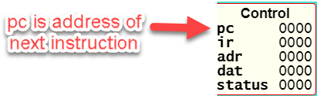

Sigma16 User Guide
Table of Contents
- 1. Introduction
- 2. Core architecture tutorials
- 2.1. Hello, world!
- 2.2. A quick tour
- 2.3. Registers, constants, and arithmetic
- 2.4. Keeping variables in memory
- 2.5. Assembly language
- 2.6. Editing files
- 2.7. Jumps and conditionals
- 2.8. Loops
- 2.9. Machine language
- 2.10. Pseudoinstructions
- 2.11. A strange program
- 2.12. Breakpoints
- 2.13. Summary of core instruction formats
- 2.14. Summary of core instructions
- 3. Standard architecture tutorials
- 4. The Sigma16 architecture
- 5. Instruction set
- 6. Table of instructions
- 7. Assembly language
- 8. Object code and linker
- 9. User interface
- 10. Programming
- 11. Installation
- 12. Rationale and design
- 13. About Sigma16
1. Introduction
Sigma16 is a computer architecture designed for research and teaching in computer systems. This application provides a complete environment for experimenting with the architecture. It includes an editor, assembler, linker, emulator, and an integrated development environment (IDE) with a graphical user interface.
Sigma16 runs in a web browser: you don't need to download or install anything. To run it, click the prominent Run link on the Sigma16 Home Page: https://jtod.github.io/home/Sigma16.
There are additional command line tools that can run in a shell; see the Installation section. There is also a digital circuit (available separately) that implements the architecture. Using these tools, machine language programs can run on both the emulator and the circuit.
The architecture is organized into subsets to make it easier to learn and to use:
- The Core subset has a small instruction set which is a good starting point for learning about computer architecture. Although simple, Core is powerful enough to support realistic programming.
- The Standard subset offers flexible programming techniques, including manipulation of bits, Boolean expressions, shifting, extracting fields, arithmetic on natural numbers and arbitrary precision integers, and concise support for stack frames.
- The full System architecture supports the study of systems programming. It provides interrupts, concurrent processes, and mutual exclusion.
Core is a subset of Standard, which is a subset of System. To learn the full architecture, start with Core and then go on to Standard and System.
For a quick start, begin with the Core tutorials, which introduce the architecture step by step. The tutorials explain the machine, show how to program it, and demonstrate how to enter and run a program and how to use the programming environment. A reference section follows the tutorials.
Our focus is on fundamental concepts, ideas and principles. Sigma16 illustrates the fundementals of computer systems but it avoids unnecessary complexity. For example, Sigma16 has just one word size (16 bits) while most commercial machines provide a variety. That variety is useful for practical applications but it complicates many of the details while not adding any new fundamental ideas. Most commercial computers that achieve success in the marketplace eventually become encrusted with complications that help support backward compatibility; this can lead to great complexity.
The following short tutorials introduce the system; full details appear in later sections. You can keep the tutorials visible in the right panel while following along with the examples in the main panel.
2. Core architecture tutorials
2.1. Hello, world!
Let's begin by running a simple example program. For now, we focus only on how to use the software tools. You don't need to understand the example code yet. An explanation of the program and the Sigma16 architecture will come later.
To launch the app, visit the Sigma16 Home Page and click on the link to run it. Sigma16 runs in the browser; you don't need to download or install anything.
- Click Editor, then Hello, world!. This will enter a small assembly language program into the editor window. Later, we'll load some of the more complex example programs into the editor, and you can also modify a program or type in a new one from scratch. For now, don't worry about the content of the program.
- Click Assembler. The assembler translates programs in assembly language (the source program) to machine language (the object program). Assembly language is a human-readable notation, while machine language is what the computer can execute. When you first enter the Assembler tab, the assembly language text in the Editor window is copied over; this is the source program.
- Click the Assemble button. This will do the translation. The assembly listing is displayed: this shows the original source code along with the machine language, and any error messages. The Show object button displays the object code, which is the machine language program produced by the translation. The Show source button displays the original source code, and the Show Listing button displays the assembly listing again.
- For this simple example, we don't need the Linker, so you can skip it. The linker is needed for larger and more complex programs with multiple modules, or with external references, or that need relocation.
- Click Processor, which shows the main components of the computer architecture, including registers and memory. These components are explained later. For now, just note that this page is where you can run programs using the emulator.
- Still on the Processor page, click Boot. This reads the machine language program into the memory, and you can see it in the Memory display. The source code (the assembly language) appears in the bottom section. If the assembler produced any error messages, the program will not boot until you fix the errors.
Click Step. The processor executes a single instruction and displays the effects on the registers and memory: blue for using a value, and red for modifying it. The assembly listing shows the instruction that just executed by highlighting it in red. It also shows the instruction that will execute next by highlighting it in blue. This is just to make it easier to follow what is happening; the machine executes the machine language program, which is in memory, and it ignores the assembly language listing which is just a convenience to help you follow the program. The machine relies only on the registers and memory, and doesn't even "know" that the assembly listing exists.
There is a keyboard shortcut: after you have clicked Step once, you can press the space bar to execute the next instruction. Thus you can step through the program by clicking Step, and then pressing the space bar repeatedly.
- Click Step repeatedly to watch the program execute, instruction by instruction. When the program terminates, the small window labelled Emulator will display Halted.
- You can also run the program to completion, without having to click Step so many times. Click Boot again to get the machine back into the initial state. Now click Run, and the program will continue executing instructions until it halts.
To run the program slowly, click Step repeatedly. To run the program faster but without updating the display after each instruction, click Run. At any time you can click Pause to stop the processor, and you can resume execution with either Step or Run. Sometimes it's useful to let the processor run at full speed until it reaches a particular instruction, and then stop. This can be done by setting a breakpoint (described in the Breakpoint tutorial below).
To exit the app, just close the browser window or tab. This may put up a dialogue box warning that any unsaved data may be lost and asking you to confirm.
2.2. A quick tour
This tutorial introduces the main components of the architecture as well as the graphical user interface.
The main window contains two main sections. The largest area, on the left side, is the main working area. When the program launches, this will show the Welcome page. The user guide is on the right side. At the top is a row of buttons (Welcome, Examples, etc.). These select which page is displayed in the main working area.
It's convenient to see the main working area and the user guide side by side. Begin by resizing the entire window (bigger is better). Then you can change the amount of space given to the user guide by clicking the arrow symbols on the right side of the top button bar. These arrows will expand or shrink the user guide: the small arrows adjust by one pixel, the larger arrows by ten pixels. If you resize the entire browser window, Sigma16 will maintain the same relative sizes of the main working area and the user guide sections.
If your screen is small, and the main working area isn't big enough, click Hide User Guide and all the space will be made available to it. The button will change to Show User Guide.
You can also open the User Guide in a separate browser tab or window. The Welcome page contains a link to do this.
The main working area has several pages, with buttons at the top to switch between them:
- Welcome contains some introductory information and links.
- Examples contains a collection of assembly language programs organized by the architecture subset. Start with the Core examples.
- Modules shows a summary of all the files and modules you currently have open. It also provides buttons allowing you to open files on your computer, close them, and select one to work on.
- Editor shows the selected module, where it can be edited. You can assemble and execute the selected module. To run a program, you'll load it into the Editor (there are several ways to do this), then assemble it (Assembler tab) and then run it (Processor tab).
- Assembler translates a program from assembly language to machine language, and shows the assembly isting as well as the object code.
- Linker is used in the Standard and System architectures, but it is not needed for Core. (The linker combines a collection of object code modules into a single executable program, and also performs name resolution and relocation.)
- Processor shows the components of the architecture and executes machine language programs.
- Options allows you to configure how the system operates.
- About gives general information, including version.
- Hide User Guide makes the entire window available to the main working area. It is a toggle that changes to Show User Guide.
2.3. Registers, constants, and arithmetic
Programs do most of their work using the register file, which is an array of 16 registers named R0, R1, R2, …, R15. The Register File is displayed in a box on the Processor page.
A register is a circuit that can hold a number, and the elements of the register file can be used to hold variable values. They are analogous to the registers in a calculator: think of each register as a box that can hold a number, and think of the register name as a variable name. Two of the registers, R0 and R15, are special and should not be used to hold variables.
A computer program is a sequence of instructions. Instructions are similar to statements in a programming language, but they are simpler.
Sigma16 performs arithmetic on data in registers. To do any computation on some numbers, we first need to get those numbers into registers. The lea instruction. can be used to place a constant into a register. For example, to load 42 into register 3, write
lea R3,42 ; R3 := 42
This is a statement in assembly language, and it describes one instruction. This statement contains three parts:
- The operation is lea. This tells the computer what action to perform, and "lea" says to put a value into a register. Later we will see why this instruction is called "lea".
- The operands are R2,42
- Everything after the semicolon is a comment. This comment is a programming language statement that describes what the instruction does: it sets the variable R3 to 42.
The same instruction can be written in a longer form:
lea R3,42[R0] ; R3 := 42
This is the same as above, except [R0] is written after the number.
You can write the instruction either way; both are translated to
exactly the same machine language, and they execute exactly the same
way. The significance of [R0], as well as the reason this instruction
is named lea, will be explained later when we discuss arrays and
pointers. The short form lea R3,42 is just an abbreviation for the
long form lea R3,42[R0]. You will see both forms in the example
programs.
The name lea is the operation, i.e. the name of the instruction. The operandd field consists of two operands separated by a comma. The first operand, R2, is called the destination; this is the register where the result will be placed. The second operand is a constant 42 followed by [R0]. When the computer executed this instruction, it simply places the constant into the destination. In a higher level language, we could write R2 := 42.
Most instructions follow a similar pattern: the first operand is the destination where the result is placed, and the subsequent operands are the arguments to the computation. This is the same convention used in assignment statements in many programming languages: the registers in add R1,R2,R3 appear in the same order as the variables in R1 := R2 + R3.
All arithmetic operations take place in the registers, and there is a separate instruction for each operation. For example, the following instruction will add the values in R8 and R1 and then put the result into R4:
add R4,R8,R1 ; R4 := R8 + R1
Notice that the operand field doesn't use operators like := or +; instead it just separates the registers with commas. The first operand (R4 in this example) is the destination, which is where the result will be placed. The last two operands (R8 and R1) are the values that will be added.
To perform a calculation, we need to get the data into registers (using lea) and then perform the calculation (using arithmetic instructions). The following program calculates 3 + 4 and puts the result into R2:
lea R5,3[R0] ; R5 := 3 lea R8,4[R0] ; R8 := 4 add R2,R5,R8 ; R2 := R5 + R8 = 3+4 = 7
It's a good idea to use comments to explain the meaning of an instruction. For now, comments like "R4 := R8 + R1" will be used to show what the instruction does. That's useful while learning what the instructions do, but later on we will use comments to give more meaningful information (for example, what do the values in the registers mean, and why are we adding them?).
There are three more arithmetic instructions. These follow the same pattern as add: in each case, the arithmetic is performed on the last two registers and the result is placed in the destination (the first register):
add R4,R11,R0 ; R4 := R11 + R0 sub R5,R2,R13 ; R5 := R2 - R13 mul R2,R10,R7 ; R2 := R10 * R7 div R5,R6,R12 ; R5 := R6 / R12, R15 := R6 rem R12
The divide instruction is slightly different: it produces two results, the quotient and the remainder. The quotient is placed in the destination, and the remainder is automatically placed into R15, even though the instruction doesn't mention R15. If you write div R15,R1,R2, the quotient is placed in R15 and the remainder is discarded.
Normally an arithmetic instruction will put a new value into the destination register, but the operand registers are left unchanged. However, what happens if one of the operands is the same as the destination, for example add R7,R7,R8?
An arithmetic instruction proceeds in three phases: (1) obtain the values in the operand registers; (2) perform the arithmetic on those values; and (3) put the result into the destination, discarding whatever value was previously there. So consider this example:
lea R7,20[R0] ; R7 := 20 lea R8,30[R0] ; R8 := 30 add R7,R7,R8 ; R7 := R7 + R8
After the two lea instructions have executed, R7 contains 20 and R8 contains 30. The add instruction does the following:
- It fetches the values in R7 and R8, obtaining 20 and 30
- It adds the values, obtaining the result 50
- It puts the result 50 into the destination R7, discarding the previous value.
The final result is that R7 contains 50.
Constant data can be specified using either decimal or hexadecimal notation.
- Decimal numbers are written as strings of digits, optionally preceded by a minus sign: 3,-19, 42.
- Hexadecimal numbers are always written as four hex digits, and in assembly language programs they are indicated by putting $ before the number. Thus $00a5 and 0165 both represent the integer 165.
lea R1,13[R0] ; R1 = 13 (hex 000d) lea R2,$002f[R0] ; R2 := 47 (hex 002f) lea R3,$0012[R0] ; R3 := 18 (hex 0012) lea R4,0012[R0] ; R4 := 12 (hex 000c)
The processor page shows numbers as hex without the leading $, but in an assembly language program the $ is needed to avoid ambiguity.
Sigma uses := as the assignment operator; thus we write R7 := R7 + R8 (and we don't write R7 = R7 + R8). This is because an assignment statement is profoundly different from an equation, and mathematicians have long used the = operator to indicate equations. It isn't just an academic or theoretical point; there have been plenty of occasions where computer programmers get confused between assignment and equality, and using the wrong operator doesn't help.
Why does assembly language use a notation like add R5,R2,R3 instead of R5 := R2 + R3? In short, every instruction will use a similar notation: a keyword for the operation, followed by the operands separated by commas. This notation is also related closely to the way instructions are represented in memory, which we'll see later
An arithmetic instruction performs just one operation. Several instructions are needed to evaluate a larger expression. In general, you'll need a separate instruction for every operator that appears in an expression.
Example: calculate 3 + 4 * 5 and put the result into R10. We have to put the numbers into registers, using lea, and then perform the arithmetic. It doesn't matter which registers are used (as long as we avoid R0 and R15).
lea R1,3[R0] ; R1 := 3 lea R2,4[R0] ; R2 := 4 lea R3,5[R0] ; R3 := 5 mul R2,R2,R3 ; R2 := R2*R3 = 4*5 add R10,R1,R2 ; R10 := R1 + R2 = 3 + 4*5 = 23
This is nearly enough to constitute a complete program. Only one more thing is needed: a way to terminate the program when it finishes. There is a special instruction to do this: a trap instruction, where the first operand is R0, will stop the program.
trap R0,R0,R0 ; halt
Here is a complete program named ConstArith:
; ConstArith: illustrate lea and arithmetic instructions
; This file is part of Sigma16
; Calculate 3 + 4 * 4 and put the result into R10
; Use lea to put a constant into a register
; Use mul and add to do arithmetic
lea R1,3[R0] ; R1 := 3
lea R2,4[R0] ; R2 := 4
lea R3,5[R0] ; R3 := 5
mul R2,R2,R3 ; R2 := R2*R3 = 4*5
add R10,R1,R2 ; R10 := R1 + R2 = 3 + 4*5 = 23
trap R0,R0,R0 ; halt
You can go to the Editor and type it in, but this program is part of the collection of examples built in to Sigma16. Here's how to run it:
- Go to the Examples page. Click Examples, then Core, then Small and simple programs, then ConstArith. You should see the listing of the program.
- Click Editor, and you should see the text of the program in the window.
- Go to the Assembler page. Click Assemble.
- Go to the Processor page. Click Boot, then Step repeatedly and watch the effect of each instruction by observing how the registers and memory are changed.
The Processor page shows numbers in hexadecimal. The mul instruction puts decimal 20 into R2, and this is displayed as hex 0014 (because 1 * 16 + 4 = 20).
It's a good idea to step through the program slowly, rather than running it to completion at full speed. The emulator will show the next instruction to be executed, highlighted in blue. Think about what the instruction should do; in particular what changes to the registers will occur? Then click Step and check to see if the right thing happened.
Generally you can use any register you like, and the choices of registers in the previous examples are arbitrary. Registers R1 through R14 are all the same. However, two of the registers are different:
- R0 contains the constant 0 and it will never change. Any time an instruction uses R0, the value it gets will be 0. It is legal for an instruction to attempt to modify R0 (for example, add R0,R3,R4 is legal) but after executing this instruction R0 still contains 0. The reason for this is that we frequently need to have access to a register containing 0.
- R15 is used for two specific purposes. We have already seen the first: the divide instruction places the remainder into R15. The second purpose is that R15 contains the condition code, which is a word that contains a number of bits that provide some information about an instruction. For example, if an addition produces a result that is too large to fit in a register, a special flag indicating this is set in R15. Many of the instructions, including all the arithmetic instructions, change the value of R15 as well as placing the result in the destination register. For this reason, R15 cannot be used to hold a variable since its value would be destroyed almost immediately.
To summarise, Registers R1 through R14 are all identical and can be used for variables. R0 contains 0 and will never change. R1 changes very frequently and can be used to determine various error conditions and other information about an instruction.
Here is another example:
- Suppose we have variables a, b, c, d
- Choose a register for each variable: R1=a, R2=b, R3=c, R4=d
- We wish to compute R5 = (a+b) * (c-d)
add R6,R1,R2 ; R6 := a + b sub R7,R3,R4 ; R7 := c - d mul R5,R6,R7 ; R5 := (a+b) * (c-d)
Summary.
- A lea instruction of the form lea d,const[R0] will put the constant into Rd. It can also be written as lea d,const.
- The general form of an arithmetic instruction is op d,a,b. The meaning is Rd := Ra op Rb, and the fields are:
| op | operation: add, sub, mul,div |
| d | destination register: where the result goes |
| a | first operand register |
| b | second operand register |
2.4. Keeping variables in memory
So far we have used registers in the register file to hold variables. However, there are only 16 of these, and two have special purposes (R0 and R15). That leaves only 14 registers, and most programs need more than 14 variables.
The computer contains another subsystem called the memory. This is similar in some ways to the register file. The memory contains a sequence of memory locations, each of which can hold a word. Each location is identifed by an address, and the addresses count up from
- We will use the notation mem[a] to denote the memory location
with address a.
The processor page shows two independent views into the memory; this is convenient for looking at the machine language code in one view and the data in the other view. Despite the two views, there is just one memory!
The register file and the memory serve different purposes:
- The register file is used to perform calculations. In computing something like x := (2*a + 3*b) / (x-1), all the arithmetic must be done using the register file. But there are only a few registers available.
- The memory is much larger: it contains 65,536 locations so it can hold all the variables in a program. But the memory has a limitation: the computer cannot do arithmetic directly on data in the memory.
Normally, a program keeps its variables in memory, so a variable name refers to a word in memory. Actually, the variable name just stands for the address of the location which contains the variable. This allows you to refer to a variable by a name (x, sum, count) rather than an address (003c, 0104, 00d7).
Since we need a lot of variables, they need to be kept in memory. But since we need to do arithmetic and arithmetic can be performed only on data in registers, we adopt the following strategy:
- Keep variables permanently in memory
- When you need to do arithmetic, copy a variable from memory to a register
- When finished, copy the result from a register back to memory
Two instructions are needed to do this:
- load copies a word from a memory location into a register. Suppose xyz is a variable in memory; then to copy its value into R2 we could write either load R2,xyz[R0] or load R2,xyz. Again, the [R0] is optional; if you write the short form xyz the assembler will automatically expand this to the full form xyz[R0].
- store copies a word from a register into a memory location. If R3 contains the result of some calculations, and we want to put it back into memory in a variable named result, we would write store R3,result[R0]
At this point we have enough instructions to write an assignment statement in assembly language. Typically we will first write an algorithm using higher level language notation, and then translate it into instructions.
Example: translate x := a+b+c into assembly language.
Solution:
load R1,a[R0] ; R1 := a load R2,b[R0] ; R2 := b add R3,R1,R2 ; R3 := a+b load R4,c[R0] ; R4 := c add R5,R3,R4 ; R5 := (a+b) + c store R5,x[R0] ; x := a+b+c
Why does the computer have both registers and memory? After all, this makes programming a little more complicated. You have to keep track of which variables are currently in registers, and you have to use load and store instructions to copy data between the registers and memory. Wouldn't it be easier just to get rid of the distinction between registers and memory, and do all the arithmetic on memory?
Yes, this would be simpler, and there have actually been real computers like that. However, this approach makes the computer very much slower. With modern circuits, a computer without load and store instructions (where you do arithmetic on memory locations) would run approximately 100 times slower. So nearly all modern computers do arithmetic in registers, and use instructions like load and store to copy data back and forth between registers and memory.
The variables used in a program need to be defined and given an initial value. This is done with the data statement. The variable name comes first, and it must start at the beginning of the line (no space before it). Then comes the keyword data, followed by the initial value, which may be written in either decimal or hexadecimal.
For example, to define variables x, y, z and give them initial values:
x data 34 ; x is a variable with initial value 34 y data 9 ; y is initially 9 z data 0 ; z is initially 0 abc data $02c6 ; specify initial value as hex
The data statements should come after all the instructions in the program. This may look surprising: in some programming languages you have to declare your variables at the beginning, before using them. There is a very good reason why we will put the instructions first, and the data statements after; but the reason will come later.
Here is a simple example of a complete program that uses load, store, and data statements:
; Program Add. See Sigma16/README.md in top folder
; A minimal program that adds two integer variables
; Execution starts at location 0, where the first instruction will be
; placed when the program is executed.
load R1,x[R0] ; R1 := x
load R2,y[R0] ; R2 := y
add R3,R1,R2 ; R3 := x + y
store R3,z[R0] ; z := x + y
trap R0,R0,R0 ; terminate
; Expected result: z = 37 (0025)
; Static variables are placed in memory after the program
x data 23
y data 14
z data 0
- Go to the Examples page. Click Core, then Small and Simple Programs, then Add.
- Click Editor, and you should see the text of the program in the window.
- Go to the Assembler page. Click Assemble.
- Go to the Processor page. Click Boot, then Step repeatedly and watch the effect of each instruction by observing how the registers and memory are changed.
2.5. Assembly language
The programs we have seen so far are written in assembly language. The machine itself executes programs in machine language, which is covered later. Assembly language is translated to machine language by a program called an assembler.
The purpose of assembly language is to give the programmer absolute control over the machine language program without having to remember lots of numeric addresses and codes. Assembly language is readable for humans, while machine language is executable by machines. For example, it is easier to remember the name "mul" for multiply than to remember the machine language code (which happens to be 3). Similarly, it's easier to remember the names of variables (x, y, sum, total) than the numeric addresses of the memory locations that hold these variables.
The syntax of assembly language is simple and rigid. Every statement must fit on one line of source code; you cannot have a statement that spans several lines, and you cannot have several statements on one line.
Sigma16 assembly language uses a small set of characters. Any character not on this list will generate an error message. A Sigma16 program can manipulate any 16-bit character, but the source assembly language code is restricted to this source character set. There are many characters that look similar but are actually distinct. For example, the minus sign, the hyphen, the en-dash, and the em-dash all look similar – you have to look really closely to see the difference – but Sigma16 assembly language uses the minus sign, and the hyphens and dashes won't work.
These are the legal characters in an assembly language program:
- letters: _abcdefghijklmnopqrstuvwxyzABCDEFGHIJKLMNOPQRSTUVWXYZ
- digits: 0123456789
- separators: (space) (tab) ,;
- quotes: " '
- punctuation: ".$[]()+-*
- other: ?£`<=>!%^&{}#~@:|/\'
Word processors often substitute characters. For example, when you type a minus sign in a paragraph of English text, word processors may replace the minus sign with a hyphen or dash, which is correct for typeset English but incorrect for assembly language. The Sigma16 editor will insert the correct characters, as will plain text editors.
Each statement has a rigid format that consists of up to four fields. The fields must be separated by one or more spaces, and a field cannot contain a space. Every field is optional, but if a field is missing then the following fields must also be missing, except for an optional comment. The fields are:
- label (optional) – If present, the label must begin in the first character of the line. If a line starts with a space, then there is no label field. A label has the same syntax as names or identifiers in many languages: it may contain letters, digits, underscores, and must begin with a letter. Both upper and lower case letters are allowed, and they syntax is case sensitive (Loop and LOOP and loop are three different labels).
- mnemonic – This is the name of the operation: load, lea, add, sub, etc. The mnemonic must be preceded by white space, and it must be the name of a valid instruction or assembler directive.
- operands field – the operands required by the type of statement. There are several formats possible for the operands field, depending on the instruction; these are detailed later. For example, for the add instruction the operand field must consist of three registers, separated by commas (e.g. R1,R2,R3). Spaces are not allowed in the operands field: R1,R2,R3 is fine but R1, R2, R3 is an error.
- comments – anything that follows the operands field, or anything that appears after a semicolon, is a comment. The semicolon is not required if the mnemonic and operands fields are present, but it is good practice to include it.
Here are some syntactically valid statements:
loop load R1,count[R0] ; R1 = count
add R1,R1,R2 ; R1 = R1 + 1
Each of the following statements is wrong!
add R2, R8, R9 ; spaces in the operand field
loop1 store x[R0],R5 ; wrong order: should be R5,x[R0]
addemup ; invalid mnemonic
loop2 load R1,x[R0] ; Space before the label
If you forget some detail, look at one of the example programs.
When the assembler is translating a program, it begins by looking at the spaces in order to split each statement into the four fields. This happens before it looks at the operation and operands. The assembly listing uses colors to indicate the different fields. If you get a syntax error message, the first thing to check is that the fields are what you intended. For example if you meant to say
add R1,R2,R3 ; x := a + b
but you have a spurious space, like this
add R1, R2,R3 ; x := a + b
the assembler will decide that the mnemonic is add, the operands field is "R1," and all the rest - "R2,R3 ; x := a + b" – is a comment, and the colors of the text in the assembly listing will show this clearly.
In assembly language, you can write constants in either decimal or hexadecimal.
- decimal: 50
- hexadecimal: $003b
Examples:
lea R1,40[R0] ; R1 = 40 lea R2,$ffff[R0] ; R2 = -1 x data 25 y data $2c9e
There are two instruction formats, which differ in the form of the operands:
- RRR instructions have an operand field containing three registers separated by commas. Example: add R8,R13,R0.
- RX instructions have an operand field that specifies a register and an address. The address is a name or constant, optionally followed by a register. Examples: load R12,array[R6]$ and *lea R5,23.
It isn't enough just to get the assembler to accept your program without error messages. Your program should be clear and easy to read. This requires good style. Good style saves time writing the program and getting it to work A sloppy program looks unprofessional. Here are a few tips.
Write good comments. You should include good comments in all programs, regardless of language. Comments are especially important in machine language, because the code tends to need more explanation. At the beginning of the program, use comments to give the name of the program and to say what it does. Use full line comments to say in general what's going on, and put a comment on every instruction to explain what it's doing.
Indent your code consistently. Each field should be lined up vertically, like this:
load R1,three[R0] ; R1 = 3 load R2,x[R0] ; R2 = x mul R3,R1,R2 ; R3 = 3*x store R3,y[R0] ; y = 3*x trap R0,R0,R0 ; stop the program
Not like this:
load R1,three[R0] ; R1 = 3
load R2,x[R0] ; R2 = x
mul R3,R1,R2 ; R3 = 3*x
store R3,y[R0] ; y = 3*x
trap R0,R0,R0 ; stop the program
The exact number of spaces each field is indented isn't important; what's important is to make the program neat and readable.
Spaces, not tabs! To indent your code, always use spaces – avoid tabs! In general, never use tabs except in the (rare) cases they are actually required. The tab character was introduced long ago into computer character sets to try to mimic the tab key on old mechanical typewriters. Unfortunately, software does not handle tab characters consistently. If you use tabs, your program can look good in one application and like a mess in another. It's easy to indent with spaces, and it works everywhere.
2.6. Editing files
Whatever method you use to edit your programs, be sure to save your work to a file from time to time. If you don't do that, sooner or later the system will crash and you'll lose your data.
A module is a section of a program; it may be the complete program or just a part of it. A module may be saved in a file or it may simply be text in the editor buffer. A program may consist of just one module, or it can be split between several files.
The Editor page contains a text area called the editor buffer. When you launch Sigma16, there is one module whose text is empty and displayed in the editor buffer. You can type a program (to be precise, a module) into the editor buffer. When you switch to the Assembler page, the Assemble button will translate the text in the editor buffer to machine language, which you can execute on the Processor page.
After entering a program in the editor buffer, you should save it to a file. Click Save in downloads and the text in the editor buffer will be written to a file on your computer. Depending on how the system is configured, there may be a dialogue box asking you for a file name, or a generic default file name may be used (for example, "S16DownloadFile (2).txt" or something similar). This file will be saved in the default Downloads directory as configured in your browser.
The reason there is limited control over the name of the saved file, and the directory where it is placed, is that web browsers enforce strict limitations on the ability of applications to access your file system. That's a good feature of browsers – you don't want a malicious web page to start reading, deleting, or corrupting your files – but it does make it inconvenient to save your edited assembly programs.
Another approach is to use a separate text editor, and to copy/paste text between the external editor and the Editor page on Sigma16.
To create a new module without destroying the existing one, click New in the editor page. This will make a new module with empty text and display that in the editor buffer, so any text you had there will disappear. However, that text isn't lost, it's just hidden, and to get it back you just need to select the previous module.
The Modules page shows a list of all the modules and allows you to select one to work on. The modules are shown in small sections separated by horizontal lines. The modules are numbered starting from 0, so if there are n modules their numbers go from 0 to n-1. For each module, the module number is shown, followed by some buttons to operate on that module, and some information about it. The first few lines of the module are shown. If you follow good programming style, where the first rew lines of each module identify the program, you'll be able to see at a glance what each module is without visiting it in the editor.
Several buttons appear for each module in the list. At any time, one of the modules is selected. Click the Select button for any module to select that one. The selected module number is highlighted in red, and when you go to the Editor page the text of the selected module appears in the editor buffer. This means you can have several programs open at the same time, and just switch from one to the other using the Select buttons in the Modules page.
You can also get rid of a module by clicking its Close button. This will delete its text, so it may be a good idea to select it and download it in the Editor before closing it.
So far we have just created new modules by clicking New (in either the Editor page or the Modules page). You can also read files on your computer into Sigma16. Click Choose files and a dialogue box will pop up. You can select one or more files, and these will now appear in the list of modules.
If a module was created by reading it from a file, its entry in the list contains an extra Refresh button. Clicking this will reread the file and you won't need to use the file chooser dialogue box again.
Common workflows:
- Just type your program into the editor buffer, and download it frequently.
- Use an external editor to enter your program. After editing it, go to the Editor page and click Clear, then copy the program from your external editor and paste it into the editor buffer. If you do this, make sure that your external text editor doesn't change your characters. For example, word processors often change the minus character (-) into an en-dash. There are four different characters that look similar to a minus sign (minus, hyphen, en-dash, em-dash) and the assembly language only accepts the minus sign. If you get bad characters, the assembler will give an error message.
- Use an external editor and save the file. Use copy and paste to transfer text between the external editor and the Sigma16 Editor page.
2.7. Jumps and conditionals
Conditionals allow a program to decide which statements to execute based on Boolean expressions. One example is the if-then statement, for example:
if x<y then statement 1 statement 2
A related form is the if-then-else statement:
if x<y then statement 1 else statement 2 statement 3
Many high level control constructs can be translated into code that contains just one form of conditional, which uses a Boolean expression bexp to decide whether to jump to someLabel, or not to jump:
if bexp then goto someLabel
The commonest case is where bexp is a comparision between two integers:
if x < y then goto someLabel
Any relational operation can be used; it isn't limited to less-than. Such conditionals are implemented in assembly language in two steps. First, a comparison instruction is used to produce a Boolean result, which is placed in the condition code (which is in R15). Second, a conditional jump instruction will either jump or not jump, depending on the condition code. This allows a choice of what instruction to execute next.
The cmp instruction compares the integers in two registers, and it sets R15 to the result of the comparison. R15 is a special register because several instructions, including cmp, use it automatically without actually specifying R15 in the instruction. Reflecting its special status, R15 also has a name: it's called the condition code.
After setting the condition code with cmp, the program executes a conditional jump. These instructions have the form jumpXX, where XX is a relation, such as lt, eq, and so on:
jumplt someLabel[R0] ; if < then goto someLabel jumple someLabel[R0] ; if <= then goto someLabel jumpeq someLabel[R0] ; if = then goto someLabel jumpne someLabel[R0] ; if != then goto someLabel jumpge someLabel[R0] ; if >= then goto someLabel jumpgt someLabel[R0] ; if > then goto someLabel
These conditional jumps treat the contents of the registers as integers represented in two's complement notation. This means, for example, that $ffff is less than 0, because $ffff represents -1. There are actually several more conditional jumps that you can use for comparing natural numbers (binary), and a few other things as well.
Usually a compare instruction is used to set the condition code, and it's followed by a conditional jump. It is also possible to save the result of a comparison in a Boolean variable, to perform logic on Boolean varaibles, and to use them to control conditional jumps. This topic will be discussed later.
The address in a jump instruction – the place to jump to – is normally specified as a label which is defined in the label field of some instruction. You can place a label in the same line as the instruction, or it can be on a line with nothing else, in which case the label refers to the next instruction. In the following code, label1 is the address of the add instruction and label 2 is the address of the sub instruction.
label1 add R2,R4,R13
label2
sub R15,R0,R1
If-then constructs are translated into assembly language following two similar fixed patterns. Suppose Bexp is a Boolean in any register Rd
if bexp then statement 1 statement 2
This is translated according to the following pattern:
if !bexp then goto L1
statement 1
L1:
statement 2
Here is an example:
a := 93 x := 35 y := 71 if y > x then a := 59 b := 104
The corresponding assembly language is:
; a := 93
lea R1,93[R0] ; R1 := 93
store R1,a[R0] ; a := 93
; x := 35
lea R1,35[R0] ; R1 := 35
store R1,x[R0] ; x := 35
; y := 71
lea R1,71[R0] ; R1 := 71
store R1,x[R0] ; x := 71
; if y > x
load R1,y[R0] ; R1 := y
load R2,x[R0] ; R2 := x
cmp R1,R2 ; compare y with x
jumple R3,skip[R0] ; if not y > x then goto skip
; then a := 59
lea R1,59[R0] ; R1 := 59
store R1,a[R0] ; a := 59
; b := 104
skip lea R1,104[R0] ; R1 := 104
store R1,b[R0] ; b := 104
Notice the use of jumple: if the Boolean expression (y>x) is False we want to skip over the "then" part, so we want to jump if y <= x (hence jumple).
An if-then-else statement has a similar compilation pattern, but this time there are two separate parts: the "then-part" and the "else-part". Depending on the value of the Boolean expression, one of those parts should be executed and the other should be skipped over.
For if-then-else, and many other control constructs, we need an unconditional jump which will always go to the specified address, and which doesn't use a Boolean.
jump somewhere[R0] ; go to somewhere
The general form of an if-then-else is
if x < y then S1 else S2 S3
The general if-then-else construct can be translated to use just goto and conditional goto:
if x >= y then goto L1
S1
goto L2
L1: S2
L2: S3
2.8. Loops
Loops are implemented using compilation patterns based on comparisons and jumps. The fundamental form is the while loop.
while Bexp do S1 S2
The compilation pattern is:
L1 if not Bexp then goto L2
S2
goto L1
L2
Occasionally you may encounter an infinite loop, which is sometimes expressed as a while loop:
while true do S1
This doesn't need a Boolean expression; it is simply compiled into:
loop instructions for S1 jump loop[R0]
Infinite loops are rather rare, or at least they should be. On occasion they are exactly what is wanted. For example, operating systems contain a loop that looks for something useful to do, and then does it, and this should be an infinite loop.
However, there is a common but poor programming style that uses infinite loops with random break or goto statements to get out of the loop. This may be appropriate on occasion but generally it is bad style.
So far we have seen several compilation patterns:
- if-then
- if-then-else
- while
Every high level programming construct has a compilation pattern, and they are mostly built using comparisons and jumps. In principle, these patterns are straightforward to use. However, there are two issues that require a little care: uniqueness of labels and nested statements.
Labels must be unique: the same one cannot be used twice in the same program, and if it is, the assembler will give an error message. This means that you cannot follow the compilation patterns blindly. If you use "loop" as the label for a while loop, as in the pattern above, you need a different label for your next while loop.
The best approach here is not to use labels like loop, loop1, loop2. It's far better to think about the purpose of the construct in your program and to use a label that reflects this purpose.
Another complication is that most programs contain nested statements. These are statements that contain smaller statements, and the containment may go several levels deep.
if b1
then S1
if b2 then S2 else S3
S4
else S5;
while b3 do S6
S7
There is an important principle to follow here: every time a statement appears in a compilation pattern (we have been calling them S1, S2, S3, etc.), it should be translated as a block.
A block is a sequence of instructions which always begins execution at the first instruction, and always finishes at the end. You never jump into the middle of it, and it never jumps out of the middle to some other place.
Every statement should be compiled into a block of code. This block may contain internal structure — it may contain several smaller blocks — but to execute it you should always begin at the beginning and it should always finish at the end.
In programming language theory, programming with blocks is often considered to be good practice or good style. But it is more than just an issue of style. If you always treat the statements inside compilation patterns as blocks, the patterns will "just work", no matter how deeply nested they are. If you violate the block structure, you will find the program extremely difficult to get to work.
2.9. Machine language
The actual bits representing an instruction (written in hex) (e.g 0d69) are machine language. The actual hardware runs the machine language — it's just looking at the numbers. The text notation with names – e.g. add R13,R6,R9 – is called assembly language. Assembly language is for humans to read and write; machine language is for machines to execute. Both languages specify the program in complete detail, down to the last bit
As a program is running, the memory contains all your program's data: the variables, data structures, arrays, lists, etc. The memory also contains the machine language program itself. The program is stored inside the computer's main memory, along with the data. This concept is called the stored program computer.
There is an alternative approach: a computer can be designed to have one memory to hold the data, and a completely separate memory to hold the program. This approach is often used for special-purpose computers (primarily micro-controllers), but experience has shown this to be inferior for general purpose computers.
Sigma16 has several different kinds of instruction. These are called instruction formats. All the instructions with the same format have similar representations in machine language. The Sigma16 Core has two instruction formats:
- RRR instructions use the registers
- RX instructions use the memory
The machine language program is in the memory. Therefore we need to represent each instruction as a word that can be stored in memory. An instruction format is a systematic way to represent an instruction using one or more words (a word is a string of bits).
- An RRR instruction is represented in one word
- An RX instruction is represented in two words.
Fields of an instruction word
An instruction word has 16 bits. There are four fields, each 4 bits. We write the value in a field using hexadecimal. hex digits: 0, 1, 2, 3, 4, 5, 6, 7, 8, 9, a, b, c, d, e, f. These correspond to 0, 1, …, 15
The names of the fields are:
- op – holds the operation code
- d – usually holds the destination register
- a – usually holds the first source operand register
- b – usually holds the second source operand register
Representing RRR instructions
Every RRR instruction consists of
- An operation (e.g. add)
- Three register operands: a destination and two operands
- The instruction performs the operation on the operands and puts the result in the destination
Example: add R3,R12,R5.
We need to specify which RRR instruction this is. Is it add? sub? mul? another? This is done with an operation code — a number that says what the operation is. There are about a dozen RRR instructions, so a 4-bit operation code suffices.
We also need to specify three registers: destination and two source operands. There are 16 registers, so a particular one can be specified by 4 bits. Total requirements: 4 fields, each 4 bits — total 16 bits. An RRR instruction exactly fills one word.
All RRR instructions have the same form, just the operation differs
- add R2,R2,R5 ; R2 = R2 + R5
- sub R3,R1,R3 ; R3 = R1 - R3
- mul R8,R6,R7 ; R8 = R6 * R7
In add R2,R5,R9 we call R5 the first operand, R9 the second operand, and R2 the destination. It's ok to use the same register as an operand and destination! Later we'll see some more RRR instructions, obut they all have the same form as these do.
Here are the RRR operation codes:
mnemonic opcode -----–— ---–— add 0 sub 1 mul 2 div 3 trap b
Don't memorise this table! You just need to understand how it's used.
Example of RRR:
add R13,R6,R9
- The opcode (operation code) is 0
- Destination register is 13 (hex d)
- Source operand registers are 6 and 9 (hex 6 and 9)
- So the instruction is 0d69
Representing RX instructions
Every RX instruction contains two operands:
- A register
- An address or constant
We have seen several so far:
- lea R5,19[R0] ; R5 = 19
- load R1,x[R0] ; R1 = x
- store R3,z[R0] ; z = R3
- jump finished[R0] ; goto finished
- The first operand (e.g. R1 here) is called the destination register, just like for RRR instructions
- The second operand x[R0] specifies a memory address
- Each variable is kept in memory at a specific location which is identified by its address
The memory operand has two parts:
- The variable x is a name for the address where x is kept — called the displacement.
- The R0 part is just a register, called the index register. This can be any register, e.g. xyz[R5]. In the special case where the index register is R0, you can write it in assembly language as either xyz or xyz[R0]. However, the machine language representation is the same, and it always gives the index register explicitly.
Consider
load R1,x[R0]
There are two words in the machine language code. The first word has 4 fields: op, d, a, b, where
- op contains f for every RX instruction
- d contains the register operand (in the example, 1)
- a contains the index register (in the example, 0)
- b contains a code indicating which RX instruction this is (1 means load)
The second word contains the displacement. In the example, this is the address of x. Suppose x has memory address 0008. Then the machine code for load R1,x[R0] is:
f101 0008
Operation codes for RX instructions
Recall, for RRR the op field contains a number saying which RRR instruction it is. For RX, the op field always contains f. So how does the machine know which RX instruction it is? Answer: there is a secondary code in the b field.
| mnemonic | b field |
|---|---|
| lea | 0 |
| load | 1 |
| store | 2 |
2.10. Pseudoinstructions
We have seen conditional jump instructions like jumplt loop. Technically, jumplt, jumpeq and the rest are called "pseudoinstructions". They are just a convenient assembly language notations to describe the actual underlying machine language instructions. All conditional jumps are expressed in machine language using just two real instructions: jumpc0 and jumpc1:
jumpc0 Rd,disp[Ra] jumpc1 Rd,disp[Ra]
The details of how jumpc0 and jumpc1 work will be discussed in the section on the Standard architecture. Here is a list of the pseudoinstructions for conditional jumps after an integer comparison:
jumplt someLabel[R0] ; if < then goto someLabel jumple someLabel[R0] ; if <= then goto someLabel jumpeq someLabel[R0] ; if = then goto someLabel jumpne someLabel[R0] ; if != then goto someLabel jumpge someLabel[R0] ; if >= then goto someLabel jumpgt someLabel[R0] ; if > then goto someLabel
2.11. A strange program
Consider ``Program Strange'' below. This program doesn't compute anything particularly useful. It's rather strange and not a model for good programming style, but it illustrates an extremely important concept, which is discussed below.
You can find the program on the Examples page, in the Core section, or you can copy it below and paste it into the Editor page. Run the program with different initial values of a variable y, as described below. For each value of y, first try executing the program manually, with paper and pencil, and then run it on the emulator to check whether your execution was correct. Give the final values of the registers, and think about what is going on as the program runs. For each run, assume that all the registers contain 0 after the program is booted, before it begins execution.
- Run the program in its original form, with y data 0
- Change the last line to y data 1 and run it again
- Now use y data 256
- y data 8192
- y data -5424
; Strange: A Sigma16 program that is a bit strange
load R1,y[R0]
load R2,x[R0]
add R2,R2,R1
store R2,x[R0]
lea R3,3[R0]
lea R4,4[R0]
x add R5,R3,R3
add R0,R0,R7
trap R0,R0,R0
y data 0
Solution – it's best to try answering the questions on your own first, and then to check by running the program on the emulator, before reading the solution!
The program loads an instruction into a register, does arithmetic on it by adding y to it, and stores the result back into memory. This phenomenon is called self-modifying code, and it exploits the fact that instructions and data are held in the same memory (this is the stored program computer concept). The original instruction is add R5,R3,R3, and its machine language code is 0533.
- When y=0, the final values are: R1=0, R2=0533, R3=3, R4=4, R5=6. The only notable points are that the store instruction doesn't actually change the value of the word in memory (it was 0533 and 0533 is being stored there), and the last add instruction doesn't change the value in R0 because R0 can never change; it is always 0. (Of course if R7=0 then the result of the addition is 0 anyway.)
- When y=1, the final values are: R1=1, R2=0534, R3=3, R4=4, R5=7. Note that R5 is not 3+3=6. When y=1 is added to the instruction, the result is 0534 which means add R5,R3,R4, so instead of adding R3+R3 it adds R3+R4.
- When y=256, the final values are: R1=256=0100, R2=0633, R3=3, R4=4, R5=0, R6=6. The decimal number 256 is 0100 in hexadecimal. When this is added to the instruction, the result is 0633, which means add R6,R3,R3 so R3+R3 is loaded into R6, not into R5.
- When y=8192, the final values are: R1=4096=2000, R2=2533, R3=3, R4=4, R5=9. The decimal number 8192 is 2000 in hexadecimal, and when this is added to the instruction the result is 2533, which means mul R5,R3,R3. It's no longer an add instruction, it's a multiply instruction that calculates R5 := R3*R3 = 9.
- When y=-5424 the program goes into an infinite loop. R1=ead0 (the hexadecimal representation of -5424, R2=f003, R3=3, and R4=4. What started out as the add instruction at x has been transformed into jump 7[R0], comprising the word at x (f003) and the following word (which is 0007). This jump instruction goes back to the first lea instruction, and the program runs for ever (lea, lea, jump).
There is a lot to say about the phenomenon of self-modifying code.
This program shows clearly that a computer does not execute assembly language; it executes machine language. Try running it on the Sigma16 application (single step each instruction). You'll see that the assembly language statement add R5,R3,R3 is highlighted in red, but that is just the GUI trying to be helpful. What's important is that the machine language instruction is fetched from memory and loaded into ir (the instruction register), and that is not 0533. The machine decodes the contents of ir and does whatever that says to do; it isn't aware of the assembly language statement. Indeed, a machine doesn't even understand the concept of assembly language — everything is just bits!
To follow exactly what is happening in the emulator, it's important to look at the pc and ir registers. These reflect what the machine is doing. The assembly language does not.
What is self-modifying code good for? The answer lies in the early history of electronic computers. Early computers (late 1940s and early 1950s) did not use an effective address (i.e. displacement + index) like Sigma16; the instructions simply specified the absolute memory address of an operand. This is ok for simple variables, but how could they process arrays?
The solution was to use self modifying code. In a loop that traverses an array, there would be a load instruction using address 0. In the body of the loop, there would be instructions to calculate the address of x[i] by loading the address of x and adding i; this is then stored into the address field of the load instruction. That instruction is then executed, obtaining the value of x[i]. This technique became obsolete in the early 1950s with the invention of index registers and effective addresses.
The pioneers of computers considered the concept of the stored program computer (i.e. the program and data are in the same memory) to be fundamental and essential. One of the most important reasons was that it made arrays possible. Now we consider the stored program concept to be fundamental for different reasons.
Self modifying code is tricky, and difficult to debug. It makes programs hard to read: you can't rely on what the program says, but on what its instructions will become in the future. For these reasonas, self modifying code is now considered to be bad programming practice.
If a program modifies itself, you can't have one copy of the program in memory and allow it to be shared by several users. For example, it's common now to have a web browser open with several tabs. Each tab is served by an independent process (a separate running instance of a program that updates the window showing the web page). If you have 5 tabs open, there are 5 processes, each running the same machine language code, and there's only one copy of that in memory. This wouldn't work if the program modified itself!
Self modifying code leads to security holes: if a hacker has the ability to change your machine language code in memory, they could make your own program act against you.
Modern computers use a technique called segmentation that prevents a program from modifying itself. This leads to increased reliability and security.
Some computers have a facility that allows you to gain the power of self modifying code without actually modifying the code in memory. The idea is to have an instruction execute R1,x[R0] which calculates the logical or of the two operands and then executes the result; x is the address of an instruction and R1 contains the modification to it. The modified instruction is executed, but there is no change to the machine code in memory. This idea was used in the IBM 360 and its successors. However, as the design of effective addresses has become more sophisticated, the execute instruction is rarely needed, and most modern computers don't provide it.
2.12. Breakpoints
When you are testing or debugging a program, you may need to execute many instructions before reaching the point you're interested in. Some programs execute thousands of instructions just to initialize. It's infeasible to step through all those instructions, yet if you just run at full speed you won't be able to see what's happening in the section you are working on.
The solution is to run the program at full speed but to force it to stop when it reaches a specific instruction. This is called a breakpoint. When the program stops at the breakpoint, you can examine the registers and step through instructions from that point. At any time you can click Run and full speed execution resumes, until either another breakpoint is encountered or the program terminates.
Both a breakpoint and a halt instruction will stop execution of the program. The difference is that after a breakpoint you can click Step or Run to continue, but after halt the program cannot execute any more instructions until you boot the processor again.
There are two ways to set a breakpoint:
- Trap break: Insert an instruction into the program that breaks execution at that point.
- External break: Define a breakpoint in the user interface, without modifying the program.
Both forms are useful. Most of the time, while debugging a program, a trap break is easier and more convenient. However, if you don't want to modify the program or reassemble it, or if you realise that you need a breakpoint after execution has already started, then an external break is better.
2.12.1. Trap break
A trap break is a trap instruction whose first operand register contains the value 4. The other operand registers are ignored. When this instruction executed, the emulator will stop execution, and you can resume execution later.
Suppose you want to check what the load instruction is doing in this code:
... add R1,R2,R3 load R4,x[R1] ...
Insert a breakpoint just before the instruction you want to examine. The breakpoint requires two instructions. The first instruction loads the break code into some register (say R9 but it doesn't matter which), and the second instruction is a trap which actually performs the break. The first operand is the register that contains the break code, and the other two operands are ignored, so we can just use R0.
... add R1,R2,R3 lea R9,4 ; R9 := trap break code trap R9,R0,R0 ; breakpoint load R4,x[R1] ...
Now you can run the program at full speed, but when it executes the trap instruction, the emulator will stop. Since the trap instruction has just executed, it will be highlighted in red, and the instruction you're interested in – the load – will be highlighted in blue. You can single step for a while, and click Run again at any time to resume full speed execution.
A common technique is to put a trap break at the beginning of a loop. By clicking Run repeatedly, you can step through the loop iterations.
For an example of a long running program with a trap break, see Examples / Core / Testing / Looper.
2.12.2. External break
An external break tells the emulator to perform a breakpoint without modifying the program. Use these steps to set an external break:
- Find the address of the instruction to stop at: look at the assembly listing, find the instruction, and the listing gives its address.
- Go to the processor page, click Boot and then click Breakpoint.
- A small window will appear; type in the breakpoint address. It must be a hexadecimal address in assembly language format: it must begin with a $ and then contain four hex digits. No other characters may be present, not even white space.
- Click Refresh. This parses the address you entered and remembers it. (If you change the address in the window, click Refresh again.)
- Click Enable. This turns on the breakpoint.
- Click CLose. The breakpoint popup window will disappear so you can see the Processor again.
Now click Run and the program will execute at full speed. When the pc register is equal to the breakpoint address, the emulator will stop. Then you can Step or Run to continue execution.
As long as the breakpoint is enabled, execution will stop every time that location is encountered. To prevent this, open the breakpoint popup again and click Disable.
2.13. Summary of core instruction formats
2.13.1. RRR format
RRR instructions are represented in one word comprising four 4-bit fields. Each field contains 4 bits representing a binary number between 0 and 15.
- op (bits 15 to 12) is the operation code, usually called opcode. This determines the operation to be performed. If the opcode is between 0 and 12 it specifies an RRR instruction. An opcode greater than 12 indicates an expanding opcode: the instruction is not RRR but one of the other formats, and it has a secondary opcode that specifies precisely which instruction it is. This is explained in the sections on RX and EXP formats.
- d (bits 11 to 8) is the destination register; the register where (in most cases) the result will be loaded.
- a (bits 7 to 4) is the register containing the first operand.
- b (bits 3 to 0) is the register containing the second operand.
In most cases, an RRR instruction takes two operands in registers specified by the a and b fields and produces a result which is loaded into the register specified by the d field. A typical example of an RRR instruction is add R4,R9,R2, which adds the contents of registers R9 and R2, and loads the result into R4. It's equivalent to R4 := R9 + R2. The opcode for add is 0, so the machinen language code for this instruction is 0492.
2.13.2. RX format
RX instructions specify a memory location as well as a register operand. The machine language representation is two words:
The RX instruction format is used for instructions that use a memory address, which is specified by an index register and a displacement. The name of the format describes briefly the two operands: a register (R) and an indexed memory address (X).
An RX instruction contains two operands: one is a memory address, and the other is a register. Typical RX instructions are loads, stores, and jumps. The instruction consists of two consecutive words. The first has the same format as an RRR instruction, with four fields: op, d, sa, sb. The second word is a single 16-bit binary number, and is called the displacement.
An RX instruction is represented by two words, with the following fields: op=15, b contains the secondary opcode which specifies which RX instruction it is, d is the destination, a is the index register, and the second word is a 16 bit constant called the displacement (often written disp for short).
- op field (bits 0-3 of ir) is f for all RX instructions
- d field (bits 4-7 of ir) has several uses
- a field (bits 8-11 of ir) is index register for effective address
- b field (bits 12-15 of ir) is secondary opcode
- disp (displacement) is the second word of the instruction
- ea (effective address) = displacement + r[a]
The memory address is specified in two parts: an index register and the displacement. The index register is specified in the sa field. In assembly language, the notation used is number[reg], where the number is the value of the displacement, and the reg is the index register. Thus $20b3[R2] means the address has displacement $20b3 and the index register is R2.
When the machine executes an RX instruction, it begins by calculating the effective address. This is abbreviated "ea", and its value is the sum of the displacement and the contents of the index register.
RX instructions are represented in two words, and they use an "expanding opcode". That is, the op field of the first word of the instruction contains the constant f (the bits 1111) for every RX instruction, and the sb field is used to hold a secondary opcode indicating which RX instruction it is.
The register operand is specified in the d field. For several RX instructions, this is indeed the destination of the instruction: for example, load places data into Rd. However, a few RX instructions use the d field differently (see, for example, the conditional jump instructions).
The memory address is specified using the sa field and the displacement, which is the entire second word of the instruction.
2.14. Summary of core instructions
The following table summarises the instructions in the Core subset of Sigma16. The columns are:
- Mnemonic. The assembly language name of the instruction
- ISA. The Instruction Set Architecture subset that contains the instruction; for this table all the instructions are Core.
- P. * indicates that the instruction is privileged, blank indicates that it is not. All of the Core instructions are unprivileged. For the meaning of "privileged", see the System section.
- Fmt. The instruction format. There are two Core instruction formats: RRR (instruction has three operand fields, each a register) and RX (instruction has a register operand and an X operand consisting of a displacement constant and an index register).
- Args. The assembly language argument format. Usually this is the same as Fmt. However, some instructions don't use all the fields, and the assembly language statement omits the irrelevant field (e.g. cmp is RRR format but the assembly language statement omits the d field, which is ignored).
- Code.
- Effect. A statement in an imperative programming language which describes what the instruction does.
Pseudoinstructions for comparisons
- jumplt jump if <
- jumple jump if <=
- jumpeq jump if =
- jumpne jump if !=
- jumpge jump if >-
- jumpgt jump if >
Assembly directives
- data
3. Standard architecture tutorials
The tutorials for the standard architecture will be availabe in a future release. See the Example programs (in the Standard section) for examples, and see the full architecture reference for a list of the instructions.
3.1. Logic
3.2. Bit fields and shifting
3.3. Stack instructions
3.4. Saving registers for procedure call
3.5. Arithmetic on natural numbers
3.6. Modules and linking
3.7. System control registers

3.8. Interrupts
4. The Sigma16 architecture
Sigma16 contains a set of registers, a memory, computational units, and an Input/Output controller.
- A register is a digital circuit that can retain one word of data. A
new value can be loaded into a register, and the current contents
may be read out. Sigma16 contains several groups of registers;
each group is displayed in a box on the Processor tab.
- The Register File is an array of 16 registers named R0, R1, \(ldots\), R15. These registers are accessible to the machine language program. Programs use the register file to hold variables that are currently in use.
- The Control registers keep track of the instruction that is currently executing.
- The System registers control the system status and interrupts.
- The Segment registers are used for memory management.
- The memory is an array of \(2^{16}\) words. Each word in the memory is identified by an address, which is a 16-bit natural number. The memory is similar to the register file, but significantly slower and much larger.
- The ALU (arithmetic and logic unit) is a circuit that can do arithmetic, such as addition, subtraction, comparison, and some other operations
- The Input/Output system can transfer data between the computer and the outside world.
4.1. Words
Sigma16 uses the following terminology:
- A word is a sequence of 16 bits.
- A double word is a sequence of 32 bits.
- A generic word is a sequence of bits of arbitrary length.
In S16, every data value is a word. The system does not use bytes (a byte is 8 bits) or extended words (64 bits).
The bits of a word are indexed from right to left, starting with 0. The rightmost (least significant) bit has index 0. For a word, the leftmost (most significant) bit has index 15. For a double word, the leftmost bit has index 31.
Word terminology. A byte is almost universally agreed to be 8 bits, but the terminology for words is not standard. Computers have been built with many different word sizes, including 1 bit (Goodyear Aerospace MPP), 4 bits (Intel 4004), 7 bits (IBM 1401), 8 bits (Intel 8080), 12 bits (PDP-8), 15 bits (Apollo Guidance Computer), 16 bits (IBM 1130), 17 bits (EDSAC), 18 bits (PDP-15), 24 bits (CDC 924), 32 bits (IBM 360), 36 bits (IBM 7094), 40 bits (IAS), 44 bits (M-EDVAC), 48 bits (Burroughs 5000), 60 bits (CDC 6600), and 64 bits (Cray 1). Much of the variation appears in early computers; most current machines have a word size which is a power of 2. (Some of these computers have an additional parity bit, which is invisible to software and not included in the figures.)
Many computers have shorter and longer words as well as their standard size. For example, IBM 360 and its descendants have a 32-bit full word, a 16-bit half word, and a 64-bit double word. For Sigma16, a word is 16 bits and a double word is 32 bits.
Every data type must be represented as one or more words. By itself, a word has no inherent meaning: it is just a sequence of bits. However, some instructions act on a word assuming that it represents some particular data type. Sigma16 supports natural numbers, integers, and Booleans. Addresses and characters are both represented as natural numbers.
Natural numbers are represented in binary. The binary value of an n-bit generic word x is
binval (x) = ∑0≤i<n (xi * 2i)
For a word (16 bits), natural numbers are restricted to the range from 0 through 2 16 - 1; that is, from 0 through 65,535. For a double word (32 bits), natural numbers are restricted to the range from 0 and 2 32 - 1; that is, from 0 through 4,294,967,295.
Integers are represented using two's complement notation. If the leftmost (most significant) bit of a word is 0, its two's complement value is the same as its binary value. If the leftmost bit is 1, the two's complement value is negative. Any two's complement number can be negated by inverting all the bits (replace 0 by 1 and vice versa) and then adding 1. To get the two's complement value of x = 1111 1010, we can negate x, obtaining 0000 0101 + 1 = 0000 0110 which is 6. Since -x = 6, we know that x = -6.
Assembly language provides several notations for expressing the value of a word. If a numeric value is out of range it is truncated.
- An unsigned integer between 0 and 65,535 (216 - 1)
- A signed integer between -32,768 and 32,767 (-215 and 215 - 1)
- A 4-digit hexadecimal constant, where the digits are 0-9 a-f. Sometimes, when the context is clear, this is written as just the hex digits (e.g 3b2f). In assembly language programs, hex constants are written with a preceding $ sign (e.g. $3b2f). This is necessary to avoid ambiguity: 1234 is a decimal number and $1234 is a hexadecimal number. In contexts where there is no ambiguiity, the $ may be omitted: for example, the GUi shows register and memory contents as hexadecimal without the leading $.
4.1.1. Bits and fields
4.1.2. Indexing bits in a word
Bit positions are numbered from right to left, starting with 0. The rightmost (least significant) bit has index 0, and the leftmost (most significant) bit has index 15. The following table shows the indices of all the bits in a word. The vertical bars show the groups of 4 bits. This grouping has no effect on the instructions, but it helps to figure out the expected results in hex notation.
| | | 15 | 14 | 13 | 12 | | | 11 | 10 | 9 | 8 | | | 7 | 6 | 5 | 4 | | | 3 | 2 | 1 | 0 | | |
4.2. Memory
The memory is a hardware array of words that are accessed by address. A memory address is 16 bits wide, and there is one memory location corresponding to each address, so there are 216 = 64k memory locations. Each memory location is a 16-bit word.
Instructions specify memory addresses in two parts: the displacement, which is a word representing a binary number, and the index, which is one of the registers in the register file. For example, a memory address could be specified as $003c[R5]; the displacement is 003c and the index is R5.
When the instruction is executed, the computer calculates the effective address by adding the value of the displacement and the value in the index register. If R5 contains 2, then the effective address of $003c[R5] is 003e.
This scheme may seem more complicated than simply specifying the address directly, but it is extraordinarily flexible. If the machine language just gave the address as a single binary number, it would be limited to accessing simple static variables. The effective address mechanism is simple to implement in hardware, as you can see in the digital circuit processor, yet it allows the implementation of local variables, records, arrays, pointers and linked data structures, jump tables, and more. These techniques are described later.
4.3. Registers
4.3.1. Register file
The register file is a set of 16 general registers that hold a 16 bit word. A register is referenced by a 4-bit binary number. In assembly language, we use the notations R0, R1, R2, …, R9, R10, R11, R12, R13, R14, R15 to refer to the registers. The state of the register file can be written as a table showing the value of each register:
| Register | Contents |
|---|---|
| R0 | 0000 |
| R1 | fffe |
| R2 | 13c4 |
| … | … |
| R14 | 03c8 |
| R15 | 0020 |
Sigma16 is a load/store style architecture; that is, it does not combine memory accesses with arithmetic. All calculations are carried out in the register file, and explicit load and store instructions must be used to copy data between the memory and the register file.
There are some programming conventions that use certain registers for special purposes. The hardware does not enforce, or even know about, these conventions, and you do not have to follow the conventions in programming. However, it is necessary to obey the conventions in order to use the standard software libraries in your program. See the section on Programming for a discussion of these standard usage conventions.
4.3.1.1. R0 contains the constant 0
One of the registers, R0, has a special property: it always contains the constant 0. It is legal to perform an instruction that attempts to load some other value into R0, but the register will still contain 0 after executing such an instruction. Such an instruction will simply have no lasting effect.
4.3.1.2. R15 is the condition code register
Several instructions produce status information: the result of a comparison, whether there was an overflow, etc. This information is automatically loaded into R15, which is the condition code register. The description of each instruction states whether R15 is modified, and what goes into it.
The bits in R15 are indexed from bit 0 (the most significant, or lefttmost bit) to bit 15 (the least significant, or rightmost). The condition code bits that have specific meanings are called flags.
- Each bit position holds a Boolean value, either False or True, represented by 0 or 1 respectively.
- Each flag gives the status of a relation or event. If the flag is True (1) the relation holds or the event has occurred. If the flag is False (0) the relation does not hold, or the event has not occurred.
One way to use flags in the condition code is to control conditional jumps:
- Use jumpc0 to jump if the Boolean is False
- Use jumpc1 to jump if the Boolean is True
Another way to use condition code flags is to save them as Boolean variables and perform logic operations on them. This is done using the extract and logicb instructions.
There are separate flags for integers (represented as two's complement) and natural numbers (represented as binary). This is necessary because the relation between two words sometimes depends on the type of the data. For example, consider the word ffff (all 1 bits). On its own, ffff is just a word of bits and has no inherent meaning.
- If ffff is interpreted as a natural number (i.e. binary), it is positive and has the value 65,535, and ffff > 0000
- If ffff is interpreted as an integer (i.e. two's complement), then it is negative and has the value -1, and ffff < 0000.
Each flag has a short 1-character name to enable them to be displayed compactly. A naming convention is that flags for integers (two's complement) have lower case letters, while flags for natural numbers (binary) have upper case letters. For example:
- l means < for integers
- L means > for integers
However, equality is the same regardless of type. If two words consist of exactly the same bits, then they have the same value as integers, natural numbers, characters, addresses, and for any other possible type as well. Therefore there is only one flag for equality, and its symbol is =.
The following table lists all the condition code flags. The index is the bit position in the condition code register (bit index 0 is the leftmost bit). The symbol is a character that is displayed if the flag is 1. The name is an alphabetic letter used in programs where the symbol is not allowed: for example you can't have a variable named is< so isE can be used instead.
- index: Each flag has an index which gives its bit position in the condition code. Bits are numbered from right to left, starting with 0. Thus the least significant bit has index 0, and the most significant bit has index 15.
- meaning: Description using English or mathematical notation
- symbol: Character that is displayed when the flag is True
- name: Alphabetical name suggested for use within variable names.
There is an exception for division by zero, but no corresponding flag in the condition code. The reason is that the div instruction places the remainder in R15, so the condition code isn't available to represent division by 0. You can test explicity for division by 0 by using jumpz specifying the register containing the divisor before execuing the div instruction.
Bits are indexed from the right, starting from bit 0. This bit with index 0 is the least significant, the bit with index 15 is the most significant bit.
Table: Condition code flags
| bit index | Relation | Symbol |
|---|---|---|
| 0 | > Int | g |
| 1 | > Nat | G |
| 2 | = | = |
| 3 | < Nat | L |
| 4 | < Int | < |
| 5 | Int overflow | v |
| 6 | Nat overflow | V |
| 7 | Carry | C |
| 8 | Stack overflow | S |
| 9 | Stack underflow | s |
| 10 | logicc function result | f |
4.3.2. Instruction control registers
There are several instruction control registers that enable the processor to keep track of the state of the running program. These registers are rarely used directly by the machine language program, but they are essential for keeping track of the execution of the program, and some instructions use them directly.
- pc – program counter (16-bit word)
- ir – instruction register (16-bit word)
- adr – address register (16-bit word)
- dat – data register (16-bit word)
- status – collection of control flags
4.3.3. Interrupt control registers
- mask
- req
- rstat
- rpc
- vect
4.3.3.1. req and mask registers
Interrupt request and mask bits (req and mask registers)
| inp | input | |
| out | output | |
| 0 | timer | timer interrupt request |
| 1 | seg fault | segmentation fault |
| bin ovfl | natural overflow | |
| tc ovfl | integer overflow | |
| 2 | zdiv | divide by 0 |
| sovfl | stack overflow | |
| sufl | stack underflow | |
| utrap | user trap |
- sys (bit 0) – system state (1-bit flag)
- ie (bit 1) – interrupts enabled (1-bit flag)
Table: Processor status flags
<table> <tr> <th>Bit</th> <th>Flag</th> <th>Meaning</th> </tr> <tr> <td>0</td> <td>**U**</td> <td>User state</td> </tr> <tr> <td>1</td> <td>**E**</td> <td>Interrupts enabled</td> </tr> </table>
4.3.3.2. Mask and request flags
<table> <tr> <th>Bit</th> <th>Flag</th> <th>Meaning</th> </tr> <tr> <td>0</td> <td>Trap</td> <td>Trap</td> </tr> <tr> <td>0</td> <td>Trap</td> <td>Trap</td> </tr> <tr> <td>1</td> <td>Overflow</td> <td>Trap</td> </tr> <tr> <td>2</td> <td>Div0</td> <td>Trap</td> </tr> <tr> <td>3</td> <td>StackFault</td> <td>Trap</td> </tr> <tr> <td>4</td> <td>SegFault</td> <td>Trap</td> </tr> <tr> <td>5</td> <td>Privelege</td> <td>Trap</td> </tr> <tr> <td>6</td> <td>Timer</td> <td>Interrupt</td> </tr> <tr> <td>7</td> <td>Input</td> <td>Interrupt</td> </tr> <tr> <td>8</td> <td>Output</td> <td>Interrupt</td> </tr> </table>
4.3.4. Segmentation control registers
(Not implemented in this version)
4.4. Instruction representation
Instructions are represented in the memory of the computer using words, just like all other kinds of data. From the programmer's perspective, an instruction is like a simple statement in a programming language. From the circuit designer's perspective, instructions must be executed using logic gates, and the specific way it is represented as a word of bits is important.
An instruction specifies several pieces of information. For example, add R1,R2,R3 is an instruction that says four things: it's an addition, the operands come from R2 and R3, and the result goes into R1. Therefore to represent instructions we need to organize a word as a collection of several fields, with each field giving one specific piece of information about the instruction.
The particular scheme for describing an instruction as a collection of fields is called an instruction format. Like most computers, Sigma16 has a small number of instruction formats and a larger number of instructions. The key to understanding the interface between machine language and digital circuit design is to master the instruction formats.
The core architecture (the simplest part of the system) uses just two instruction formats: the RRR format for instructions that perform operations in the registers, and the RX format for instructions that refer to a memory location.
The advanced parts of the architecture provide additional instructions which are represented with the EXP format. The name EXP stands simultaneously for expansion (because it provides for many additional instructions) and experimental (because it allows for experimentation with the design and implementation of new instructions).
Every instruction has a 4-bit field called the opcode (op for short). This gives 16 values of the opcode: 14 of them (0 through 13) denote the 14 RRR instructions, described later. If the op field is 14 (hex e) the instruction is EXP format and has a secondary opcode in the a and b fields. If the op field contains 15 (hex f) the instruction is RX format with a secondary opcode in the b field. The instruction formats are described below.
The first word of every instruction contains the following fields.
- op (bits 0-3) opcode, determines instruction format
- d (bits 4-7) 4-bit destination
- a (bits 8-11) 4-bit operand
- b (bits 12-15) 4-bit operand, or expanded opcode for RX
The details of each format and its fields are given below, and The following table gives an overview.
- Each instruction format has a fixed size, which is the number of words used to represent any instruction of that format.
- These words are subdivided into 4-bit fields, each with a unique name: op, d, a, b, etc.
- The type of instruction is specified by the opcode, which is the op field for RRR instructions, and which consists of several fields for the other formats.
- The instruction operands are specified by further fields.
- Some instructions combine two 4-bit fields into a single 8-bit
field.
- The a and b fields may be combined to form an 8-bit field called ab (only for the EXP format)
- The g and h fields may be combined to form an 8-bit field called gh
| Format | Size | Opcode | Operands | Example |
|---|---|---|---|---|
| RRR | 1 | op | d,a,b | add Rd,Ra,Rb |
| RX | 2 | op,b | d,a,disp | load Rd,disp[Ra] |
| EXP | 2 | op,ab | d,e,f,g,h | save Rd,Re,gh[Rf] |
There are two kinds of format: the machine instruction formats, and the assembly language instruction statement formats. There are three machine instruction formats: RRR, RX, EXP. However, there is a larger set of assembly language statement formats, because there are special syntaxes for some instructions, and there are assembler directives that aren't instructions at all. The assembly language formats are described later.
4.5. Interrupts
5. Instruction set
5.1. Memory
A memory address is a 16-bit binary number. Instructions don't specify addresses directly; they specify an address with two components: a displacement and an index, written as "displacement[index]". The displacement is a 16 bit constant, and in assembly language it may be given as a decimal integer, a hexadecimal word, or a label. The index is a register. For example,$0c45[R5] has a displacement of 0c45 and an index of R5.
When an instruction executes, the machine takes the displacement and index and calculates the effective address. This is defined to be the binary sum of the displacement and the curent value in the index register. In the example above, if R5 contains 3, then the effective address of $0c45[R5] is $0c48.
If you just want to specify an address a in an instruction, this can be written as "a[R0]". Since R0 contains the constant 0, the effective address is just a.
5.1.1. lea
The load effective address instruction lea Rd,disp[Rx] calculates the effective address of the operand disp[Rx] and places the result in the destination register Rd. The effective address is the binary sum disp+Rx.
5.1.2. load
The load instruction load Rd,disp[Rx] calculates the effective address of the operand disp[Rx] and copies the word in memory at the effective address into the destination register Rd. The effective address is the binary sum disp+Rx.
------------–— ------------------------------------–— general form load Rd,disp[Ra] effect reg[Rd] := mem[disp+reg[Ra]] machine format RX assembly format RX ------------–— ------------------------------------–—
Examples
load R12,count[R0] ; R12 := count load R6,arrayX[R2] ; R6 := arrayX[R2] load R3,$2b8e[R5] ; R3 := mem[2b8e+R5]
5.1.3. store
The store instruction store Rd,disp[Rx] calculates the effective address of the operand disp[Rx] and the value of the destination register Rd into memory at the effective address. The effective address is the binary sum disp+Rx.
------------–— ------------------------------------–— general form store Rd,disp[Ra] effect mem[disp+reg[Ra]] := reg[Rd] machine format RX assembly format RX ------------–— ------------------------------------–—
Store copies the word in the destination register into memory at the effective address. This instruction is unusual in that it treats the "destination register" as the source of data, and the actual destination which is modified is the memory location.
Most instructions take data from the rightmost operands and modify the leftmost destination, just like an assignment statement (x := y+z). However, the store instruction operates in the opposite direction. The reason for this has to do with the circuit design of the processor. Although the "left to right" nature of the store instruction may look inconsistent from the programmer's point of view, it actually is more consistent from the deeper perspective of circuit design.
Examples
store R3,$2b8e[R5] store R12,count[R0] store R6,arrayX[R2]
5.1.4. Stack
Three instructions (push, pop, top) support operations on a stack represented as an array of contiguous elements, where the stack grows from lower to higher addresses. These instructions provide safe operations: they never overwrite memory outside the stack, and they indicate stack underflow and overflow by setting the condition code and optionaly performing an exception.
A stack is represented by three addresses, which are provided to the push, pop, and top instructions in registers:
- The stack base is the address of the first word allocated for the stack.
- The stack limit is the address of the last word allocated for the stack.
- The stack top is the address of the stack element that was pushed most recently.
Although three addresses are required to characterise the state of a stack, each individual stack instruction (push, pop, top) requires only two of those addresses. These are supplied as the Ra and Rb operands, while Rd is used to supply or receive the data value.
The maximum number of elements the stack may contain is stack limit - stack base + 1. Normally, stack limit is greater than stack base. If they are equal, there is only one word allocated for the stack (which is generally not useful), and if stack base > stack limit then no memory at all is allocated and every stack operation will signal an underflow or overflow error.
If the stack is not empty, then stack top is the address of the top element in the stack. If the stack is empty, then stack top must be stack base - 1.
A stack can be created and initialized by allocating a region of memory, setting stack base to the first word and stack limit to the last word, and setting stack top to stack base - 1.
5.1.5. push
The push instruction pushes an element onto a stack. It is RRR format, and its general form is:
push Rd,Ra,Rb
- Rd = stack data: value to be pushed, unchanged
- Ra = stack top: incremented unless stack was full
- Rb = stack limit: unchanged
- R15 condition code indicates stack overflow
- System interrupt request register indicates stack overflow
This instruction pushes the word in Rd onto a stack with stack top in Rd and stack limit in Rb, provided that the stack is not full. The push stores the data word in Ra into memory and increments stack top Rd. If the stack is full, nothing is stored into memory and a stack overflow error is indicated in the condition code and interrupt request registers; an interrupt will occur if interrupts are enabled and the stack mask bit is set. The operational semantics is:
if Ra < Rb then Ra := Ra + 1; mem[Ra] := Rd else R15.sovfl := 1, req.sovfl := 1
If Rd = Rb this means the stack completely fills the region of memory allocated for the stack, and there is no space to store a new element. In this case, the push instruction does not store Ra, it doesn't modify Rd, it doesn't modify memory outside the block, and it doesn't overwrite data in the stack. Instead, the instruction indicates a stack overflow by setting the sovfl (stack overflow) bit in the condition code (R15), and it also sets the stack fault bit in the interrupt request register. If interrupts are enabled and the stack fault bit is set in the interrupt mask register, then an interrupt will occur after the push instruction completes. There will be no interrupt if interrupts are disabled, or the stack fault bit is not set in the mask register.
5.1.6. pop
The push instruction removes an element onto a stack and returns it. The instruction is RRR format, and its general form is:
pop Rd,Ra,Rb
- Rd = stack data: destination for the popped stack element
- Ra = stack top: decremented unless stack was empty
- Rb = stack base: unchanged
- R15 condition code indicates stack underflow
- System interrupt request register indicates stack underflow
This instruction pops the word from a stack with stack top in Ra and stack base in Rb, provided that the stack is not empty. The pop loads the top element of the stack into Rd and decrements stack top. If the stack is empty, stack top is not decremented, Rd is not modified, and a stack underflow error is indicated in the condition code and interrupt request registers; an interrupt will occur if interrupts are enabled and the stack mask bit is set. The operational semantics is:
if Ra >= Rb then Rd := mem[Ra]; Ra := Ra - 1 else R15.suvfl := 1, req.suvfl := 1
5.1.7. top
The top instruction returns the top element on a stack but does not remove it. The instruction is RRR format, and its general form is:
top Rd,Ra,Rb
- Rd = stack data: destination for the top element of the stack; unchanged if stack is empty
- Ra = stack top: unchanged
- Rb = stack base: unchanged
- R15 condition code indicates stack underflow
- System interrupt request register indicates stack underflow
This instruction loads the element at stack top into Rd, provided that the stack is not empty. If the stack is empty, Rd is not modified and a stack underflow error is indicated in the condition code and interrupt request registers; an interrupt will occur if interrupts are enabled and the stack mask bit is set. The operational semantics is:
if Ra >= Rb then Rd := mem[Ra] else R15.suvfl := 1, req.suvfl := 1
5.1.8. save, restor
The save and restore instructions are analogous to store and
load, but they transfer a block of data between registers and
memory, not just an individual word.
- save stores a sequence of adjacent registers into a block of contiguous memory locations.
- restor is the opposite: it loads the block of memory into the registers.
For both instructions, the sequence of registers is specified by
giving the first and last register. The starting address of the
memory block is specified by an effective address of the form
offset[Reg], where Reg is any register (e.g. R4, R13, etc) and
offset is a number between 0 and 255.
This instruction will save registers R3 through R9 into memory starting at address 5 + R13:
save R3,R6,5[R13]
It is equivalent to a sequence of store instructions:
store R3,5[R13] store R4,6[R13] store R5,7[R13] store R6,8[R13]
To load the entire block back into the same registers, use
restor R3,R6,5[R13]
This is equivalent to a sequence of load instructions:
load R3,5[R13] load R4,6[R13] load R5,7[R13] load R6,8[R13]
There is an important restriction with save and restor: the
displacement is limited to a small natural number between 0 and 255.
(Recall that for load and store, the displacement can be as large as
65,535.) The reason for this is that the save and restor
instructions are EXP format and the offset is represented by an 8-bit
field (whereas load and store are RX format and the displacement is a
16-bit word).
A common usage of save and restor is to simplify procedure call and return. When a procedure is called, store the registers onto the execution stack when a procedure is called (using save), and then to load them back from the stack when the procedure is returned (restor). Normally, the format of a stack frame has a fixed location for saving the registers, at a small offset from the beginning of the frame. A register called the stack pointer gives the address of the frame, and the offset for saving the registers is normally a small value (such as 3 or similar).
Both save and restor are EXP format instructions, so each instruction is two words:
- The first instruction word:
- op = e (indicating escape to EXP format)
- d = index register
- ab = secondary opcode
- The second word:
- e = first register
- f = second register
- gh = 8-bit offset
- The starting address of the memory block is R[d] + gh
- The set of registers is R[e], R[e+1], …, R[f]
For save, the effect is
- mem[R[d]+gh] := R[e]
- mem[R[d]+gh+1] := R[e+1]
- mem[R[d]+gh+2] := R[e+2]
- …
- mem[R[d]+gh+f-e] := R[f]
For restor, the effect is similar but the assignments are reversed:
- R[e] := mem[R[d]+gh]
- etc.
The argument registers are not modified, unless they happen to be loaded by a restor.
The instruction is EXP format, and the offset is limited to 8 bits, because it is specified in the gh field, which is the rightmost 8 bits of the second word of the instruction. The secondary opcode is 8, which is in the ab field of the first word of the instruction.
The first register to be saved is in the e field, and the last register to be saved is in the f field. The instruction always stores at least one register. If e and f are the same, for example save R5,R5,0[F14] then that register (R5 in the example) is stored. If e > f then the register numbers wrap around For example,
save R14,R2,20[R5]
is equivalent to
store R14,20[R5] store R15,21[R5] store R0,22[R5] store R1,23[R5] store R2,24[R5]
The restor instruction copies a sequence of consecutive memory locations starting from the effecive address into a sequence of adjacent registers. The index register (R14 in this example) is not changed. Restor is equivalent to a fixed sequence of load instructions; its purpose of restor is to restor the state of registers from memory after a procedure call or a context switch.
The instruction restor Re,Rf,gh[Rd] copies the contents of memory at consecutive locations beginning with mem[gh+Rf] into registers Re, Re+1, …, Rf.
The instruction is EXP format, and the displacement is limited to 8 bits, because it is specified in the gh field (the rightmost 8 bits) of the second word of the instruction. The secondary opcode is 9, which is in the ab field of the first word of the instruction. The assembly language statement format is RRXEXP.
For example, consider this instruction:
restor R3,R10,4[R14]
The effect is equivalent to
load R3,4[R14] load R4,5[R14] load R5,6[R14] load R6,7[R14] load R7,8[R14] load R8,9[R14] load R9,10[R14] load R10,11[R14]
5.2. Arithmetic
5.2.1. add
The instruction add Rd,Ra,Rb has operands Ra and Rb and
destination Rd. It fetches the operands Ra and Rb, calculates
the sum Ra + Rb, and loads the result into the destination Rd.
The effect is Rd := Ra + Rb. For example, add R5,R12,R2
performs R5 := R12 + R3.
The add instruction is RRR format with opcode=0. Given destination Rd and operands Ra and Rb (where d, a, b are hex digits), add Rd,Ra,Rb is reprseented by 0dab.
Code Assembly Effect –— -----------–— -------------–— 062c add R6,R2,R12 ; R6 := R2 + R12 0d13 add R13,R1,R3 ; R13 := R1 + R3
The add instruction sets both the destination register and the condition code. Flags in the condition code indicate overflow, carry, and sign of the result.
----–— ----------------–— R15.ccG result > 0 (binary) R15.ccg result > 0 (two's complement) R15.ccE result = 0 R15.ccl result <tc 0 (two's complement) R15.ccV overflow (binary) R15.CCv overflow (two's complement) R15.CCc carry output ----–— ----------------–—
The bits in a word are numbered from right to left, starting at bit index 0 in the rightmost (least significant) position, up to index 15 at the leftmost (most significant) position. The notation x.n denotes the bit in x with index n.
A field is a consecutiave sequence of bits within a word. A field is specified with the index of the leftmost bit in the field, along with the size of the field. For example, the field in x with index 9 and size 3 consists of the bits x.9 x.8 x.7.
add R1,R2,R3 ; R1 := R2 + R3
The instruction add Rd,Ra,Rb has operands Ra and Rb and destination Rd. It fetches the operands Ra and Rb, calculates the sum Ra + Rb, and loads the result into the destination Rd. The effect is Rd := Ra + Rb. For example, add R5,R12,R2 performs R5 := R12 + R3.
The add instruction is RRR format with opcode=0. Given destination Rd and operands Ra and Rb (where d, a, b are hex digits), add Rd,Ra,Rb is reprseented by 0dab.
| Code | Assembly | Effect |
|---|---|---|
| 062c | add R6,R2,R12 | ; R6 := R2 + R12 |
| 0d13 | add R13,R1,R3 | ; R13 := R1 + R3 |
The add instruction can be used for both binary addition (on natural numbers) and for two's complement addition (on signed integers).
- 16-bit natural numbers are unsigned integers 0, 1, 2, …, 65535. If two natural numbers are added, the result is a natural number (the result cannot be negative). If the result is 65536 or larger, it cannot be represented as a 16 bit binary number. If this happens, the destination register is set to the lower 16 bits of the true result, and the binary overflow flag is set in the Condition Code.
- 16-bit two's complement numbers are signed integers -32999?, …, -1, 0, 1, …, 32???. If two signed integers are added, the result is a signed integer. If the result is less than -32000 or greater than 32000, then the result cannot be represented as a 16 bit two's complement number. If this happens, the destination register is set to the lower 16 bits of the true result, and the two's complement overflow flag is set in the Condition Code. Furthermore, the overflow flag is set in the req register. If interrupts are enabled and the overflow flag is 1 in the mask register, then an interrupt will occur immediatelhy after the add instruction executes.
The add instruction can be used for both binary addition (on natural numbers) and for two's complement addition (on signed integers).
- 16-bit natural numbers are unsigned integers 0, 1, 2, …, 65535. If two natural numbers are added, the result is a natural number (the result cannot be negative). If the result is 65536 or larger, it cannot be represented as a 16 bit binary number. If this happens, the destination register is set to the lower 16 bits of the true result, and the binary overflow flag is set in the Condition Code.
- 16-bit two's complement numbers are signed integers -32999?, …, -1, 0, 1, …, 32???. If two signed integers are added, the result is a signed integer. If the result is less than -32000 or greater than 32000, then the result cannot be represented as a 16 bit two's complement number. If this happens, the destination register is set to the lower 16 bits of the true result, and the two's complement overflow flag is set in the Condition Code. Furthermore, the overflow flag is set in the req register. If interrupts are enabled and the overflow flag is 1 in the mask register, then an interrupt will occur immediatelhy after the add instruction executes.
5.2.2. sub
Example: sub R1,R2,R3 ; R1 := R2 - R3
This instruction is similar to add; the only difference is that it calculates R2-R3 and places the result in R1. The effect on the condition code is the same as for add.
The instruction sub Rd,Ra,Rb has operands Ra and Rb and destination Rd. It fetches the operands Ra and Rb, calculates the difference Ra - Rb, and loads the result into the destination Rd. The effect is Rd := Ra - Rb. For example, sub R5,R12,R2 performs R5 := R12 - R3.
The sub instruction is RRR format with opcode=1.
Code Assembly Effect –— -----------–— -------------–— 162c sub R6,R2,R12 ; R6 := R2 - R12 1d13 sub R13,R1,R3 ; R13 := R1 - R3
In addition to setting the destination register, the sub instruction sets several bits in the condition code R15 and may set a bit in the req register.
----–— ----------------–— R15.ccG result > 0 (binary) R15.ccg result > 0 (two's complement) R15.ccE result = 0 R15.ccl result < 0 (two's complement) R15.ccV overflow (binary) R15.CCv overflow (two's complement) R15.CCc carry output R15.ccf logicc instruction function result ----–— ----------------–—
5.2.3. mul
Example: mul R1,R2,R3 ; R1 := R2 * R3
The multiply instruction mul Rd,Ra,Rb calculates the integer (two's complement) product of the operands Ra and Rb, and places the result in the destination register Rd. The mul instruction does not produce the natural (binary) product.
If the magnitude of the product is too large to be representable as a 16 bit two's complement integer, this is an overflow. If overflow occurs, the integer overflow bit is set in the condition code (F15) and the integer overflow bit is also set in the interrupt request register (req), and the lower order 16 bits of the product are loaded into Rd.
----–— ----------------–— R15.ccg result > 0 (two's complement) R15.ccE result = 0 R15.ccl result < 0 (two's complement) R15.CCv overflow (two's complement) R15.CCc carry output ----–— ----------------–—
5.2.4. div
Example: div R1,R2,R3 ; R1 := R2 / R3, R15 := R2 rem R3
Unlike the other arithmetic operations, the divide instruction div Rd,Ra,Rb produces two results: the quotient Ra / Rb and the remainder Ra rem Rb. It loads the quotient into the destination register Rd, and the remainder is loaded into R15.
If the destination register Rd is actually R15, then the quotient is placed in R15, and the remainder is discarded.
The divide instruction doesn't set the condition code, since R15 is used for the remainder. Therefore there is no condition code bit to indicate division by 0. However, it is easy for a program to detect a division by 0.
- (Explicit test for error) The program can compare the divisor with 0 before or after executing the divide instruction, and jump to an error handler if the divisor is 0. This is similar to testing the condition code after an add, sub, or mul instruction, but it does require two instructions: a compare followed by a conditional jump. For example:
div R1,R2,R3 ; R1 := R2/R3, R15 := R2 rem R3 cmp R3,R0 ; Did we divide by 0? jumpeq zeroDivide[R0] ; If yes, handle error
- (Exception) The program can detect division by 0 using an interrupt. To do this, enable interrupts and enable the interrupt mask for division by 0. See the section on Interrupts. This approach does not require a compare or jump instruction for each division.
5.2.5. cmp
The compare instruction cmp Ra,Rb compares the values in the operand
registers Ra and Rb, and then sets flags in the condition code
(R15) to indicate the result. The notation R15.i means bit i in R15;
thus R15.0 is the leftmost bit of R15. The instruction performs both
natural number comparison (binary) and integer comparison (two's
complement). The resulting flags are
- binary less than (L) in R15.0
- two's complement less than (<) in R15.1
- equal in R15.2
- binary greater than (G) in R15.3
- two's complement greater than (>) in R15.4
The result of a cmp instruction can be used to control a conditional jump. The jumpc0 instruction jumps is a specified bit of R15 is 0, and the jumpc1 instruction jumps if a specified bit is 1.
Pseudoinstructions provide the most common cases; for example jumple jumps if the condition code indicates that a comparison produced either integer less-than or equal. A common pattern is a cmp followed by a jump pseudoinstruction, for example:
cmp R4,R9 ; compare R4 with R9 jumpgt abc]R0] ; if R4 > R9 then goto abc
5.2.6. addc
The addc instruction performs a binary addition with carry propagation. It adds the two operand registers and the carry bit in the condition code register, R15. The sum is loaded into the destination register Rd and the carry output is written back into the carry bit, overwriting its previous value. Overflow is not possible with this instruction.
5.2.7. muln
muln Rd,Ra,Rb
The muln instruction calculates the product of two natural numbers in Ra and Rb. The result is 32 bits; the leftmost 16 bits (the most significant part) is loaded into R15, and the rightmost 16 bits (the least significant part) is loaded into Rd. If Rd is R15, the most significant part is discarded.
5.2.8. divn
divn Rd,Ra,Rb
The divn instruction divides two natural numbers: dividend / divisor. All the numbers – numerator, denominator, quotient, remainder – are natural numbers represented in binary.
- The dividend is a 32 bit natural number; its leftmost 16 bits are in R15 and the rightmost 16 bits are in Ra. Thedenominator is in Rb.
- Two results are produced: a 32-bit quotient anda 16-bit remainder.
- The leftmost 16 bits of the quotient are placedin R15 (replacing the leftmost part of the dividend). The rightmost16 bits of the quotient are placed in Rd.
- The remainder is placed in Ra, overwriting the least significant half of the dividend operand
5.3. Jumps
5.3.1. jump
5.3.2. jumpc0, jumpc1
5.3.3. jal
5.3.4. jumpz, jumpnz
5.4. Branches
A branch instruction transfers control to another address, rather than to the following instruction. The destination address is specified as an offset relative to the value of the pc (after the pc has been incremented).
5.4.1. brf, brb
The brf instruction is Branch forward, and the brb instruction is branch backward.
The operand is a 16-bit natural number called the offset. This is added to (brf) or subtracted from (brb) the current value of the pc register. Since the pc is incremented as the instruction is fetched, an offset of 0 refers to the instruction after the brf/brb.
a brf 3
add R0,R0,R0 ; brf 0 would go here
add R0,R0,R0 ; brf 1 would go here
add R0,R0,R0 ; brf 2 would go here
b add R0,R0,R0 ; the instruction a actually goes here
Normally the operand is expressed as a label rather than a constant.
a brf b
add R0,R0,R0
add R0,R0,R0
add R0,R0,R0
b add R0,R0,R0 ; the instruction a goes here
If the operand is expressed as a number (brf 3), the assembler uses the number in the machine instruction. However, if the operand is expressed as a lable (brf b), the assembler calculates the correct offset value and inserts that into the machine instruction.
In order to implement goto xyz, use brf xyz (branch forward) if
xyz occurs after the branch instruction, and use brb xyz (branch
backward) if xyz occurs before the branch.
5.4.2. brfc0, brbc0, brfc1, brbc1
There are four conditional branch instructions that perform a branch based on the value of a bit in a register. For example, brfc1 R7,3,dest is equivalent to "go to dest if bit 3 of R7 is 1". The instructions are:
- brfc0 - branch forward if the specified bit is 0
- brfc1 - branch forward if the specified bit is 1
- brbc0 - branch backward if the specified bit is 0
- brbc1 - branch backward if the specified bit is 1
These instructions are somewhat similar to jumpc0 and jumpc1, but there are two key differences:
- The branch instructions can use any bit in any register of the register file to determine whether the branch will take place, but the jump instructions can use only a bit in the condition code R15.
- The branch instructions are pc-relative, but the jump instructions give the absolute address of the destination.
5.4.3. brfz, brbz, brfnz, brbnz
These instructions perform a branch if a specified register is either equal to 0 (z), or not equal to 0 (nz). Equal to 0 means every bit in the register is 0; not equal to 0 means some bit in the register is 1. For example, brfnz R3,dest means "if R3 !=0 then goto dest".
- brfz - branch forward if zero
- brfnz - branch forward if not zero
- brbz - branch backward if zero
- brbnz - branch backward if not zero
5.4.4. dsptch (dispatch)
The dispatch instruction implements a branch table. It provides an efficient way to implement a case statement using a binary code.
Suppose code is a variable that contains an integer, such that \(0
\leq code < 8\). The following set of instructions will branch to a
specific destination depending on the value of the code.
load R8,code[R0] ; load a 3-bit binary code dsptch R8,3,0 ; 38 dispatch 3-bit code brf caseA ; if code=0 then goto caseA brf caseB ; if code=1 then goto caseB brf caseC ; if code=2 then goto caseC brf caseD ; if code=3 then goto caseD brf caseE ; if code=4 then goto caseE brf caseF ; if code=5 then goto caseF brf caseG ; if code=6 then goto caseG brf caseH ; if code=7 then goto caseH
The dsptch instruction has three operands: a register code that
specifies a binary code, an integer constant size that gives the
number of bits in the code, and a fixed offset (which is usually 0).
- The instruction automatically uses size to mask the code, by performing a logical and. For example, if size is 3, it calculates code AND fff7. This ensures that the resulting code is not out of range: it is guaranteed to lie between 0 and \(2 ^ size - 1\).
- The instruction then performs a pc relative branch forward by a distance of 2 * code + offset. The multiplication by 2 ensures that a 2-word instruction can be placed in each position in the branch table.
- The branch table is normally a sequence of unconditional branch instructions, either brf or brb.
5.5. Logic and bits
The instructions in this section treat a word as a sequence of bits, not as a number. There are instructions that perform logic operations on individual bits, on all the bits in a word, and that operate on bit fields.
The bits in a word x are indexed from 0 to 15, where 0 is the index of the leftmost (most significant) bit and 15 is the index or the rightmost (least significant) bit. The notation x.i means the bit with index i in the word x. For example, x.0 is the leftmost bit and x.15 is the rightmost bit. When used in an instruction, a bit index is specified as a 4-bit binary number i such that 0 <= i <= 15.
A bit field is a contiguous sequence of bits in a word. It is specified by the register containing a word, the index of the starting bit in the field, and the size of the field.
The bit field instructions can be implemented using a combination of logic and shift instructions. They are included in the architecture for several reasons:
- These operations provide useful abstractions for writing interpreters and simulators.
- When used in an interpreter, bit field operations are executed frequently: they are a crucial part of the "inner loop". Therefore the efficiency of common bit field operations is important.
- The bit field instructions are easier to use and more readable than the corresponding logic and shifts.
- These instructions can be implemented efficiently in a digital circuit and this implementation is an interesting design problem.
5.5.1. pseudoinstructions: invw, andw, orw, xorw
There are pseudoinstructions that perform common bitwise logical operations on one or two words, producing a word result. The commonest logical operations are supported: logical negation, logical and, inclusive or, and exclusive or.
- invw R3,R4 ; R3 := invert R4
- andw R3,R4,R5 ; R3 := R4 and R5
- orw R3,R4,R5 ; R3 := R4 or R5
- xorw R3,R4,R5 ; R3 := R4 xor R5
A pseudoinstruction is not actually a machine instruction: the Sigma16
processor circuit does not have an andw instruction. Instead, it
has a more general and powerful instruction (logicw) that is capable
of performing andw, as well as many other operations. The andw
pseudoinstruction is just an assembly language notation that generates
the corresponding logicw. Using pseudoinstructions can make a
program more readable, and it enables you to perform simple logic
operations without learning the more complicated general instructions.
5.5.2. General logic functions
The commonest Boolean operators are inv, and, or, which can be defined using truth tables. The truth table for inv (also called not, logical negation) has just one input and two lines:
| x | inv x |
|---|---|
| 0 | 1 |
| 1 | 0 |
The truth tables for and, or, xor have two inputs and four lines that enumerate all possible inputs and the corresponding output. (For now, ignore the numbers in the bottom line.)
| x | y | x and y | x xor y | x or y |
|---|---|---|---|---|
| 0 | 0 | 0 | 0 | 0 |
| 0 | 1 | 0 | 1 | 1 |
| 1 | 0 | 0 | 1 | 1 |
| 1 | 1 | 1 | 0 | 1 |
| 1 | 6 | 7 |
However, those aren't the only logic functions with two inputs. Other useful ones inlcude nor (not or) as well as nand (not and):
| x | y | x nor y | inv y | inv x | x nand y |
|---|---|---|---|---|---|
| 0 | 0 | 1 | 1 | 1 | 1 |
| 0 | 1 | 0 | 0 | 1 | 1 |
| 1 | 0 | 0 | 1 | 0 | 1 |
| 1 | 1 | 0 | 0 | 0 | 0 |
| 8 | a | c | e |
How many other logic functions exist? (After all, some of them are useful.) Every logic funciton with two inputs \(x\), \(y\), can be defined by a truth table where we list all possible values for \((x,y)\), and give the corresponding result. Each result could be either 0 or 1. So every logic function can be defined by the following table, with appropriate values for \((a,b,c,d)\):
| x | y | result |
|---|---|---|
| 0 | 0 | a |
| 0 | 1 | b |
| 1 | 0 | c |
| 1 | 1 | d |
For example, if \((a,b,c,d) = (0,0,0,1)\) this is the truth table for and. if \((a,b,c,d) = (0,1,1,0)\) this is the truth table for xor. For convenience and brevity, we can write the binary value of each string of four bits: thus the code for xor is 6 and so on. The following table lists some of the logic funcitons, but it actually enumerates all of them.
| abcd | code | function |
| 0000 | 0 | |
| 0001 | 1 | x and y |
| 0010 | 2 | |
| 0011 | 3 | |
| 0100 | 4 | |
| 0101 | 5 | |
| 0110 | 6 | x xor y |
| 0111 | 7 | x or y |
| 1000 | 8 | x nor y |
| nn | 9 | |
| 1010 | 10 | inv y |
| 1011 | 11 | |
| 1100 | 12 | inv x |
| 1101 | 13 | |
| 1110 | 14 | x nand y |
| 1111 | 15 |
Instead of providing half a dozen specialised instructions for some
(but not all) of the useful logic functions, Sigma16 provides general
logic instructions that implement all of them. These are logicw to
perform logic on all the bits in a word, and logicb and logicc to
perform logic on individual bits (i.e. Boolean variables).
5.5.3. logicw
The logicw instruction performs a bitwise logic operation on two operands: each bit of the result is obtained by performing the logic function on the corresponding bits of the two operands. The instruction allows an arbitrary logic function on two bits.
An arbitrary logic function of two varialbes g is applied to the two operand registers Re and Rf, and the result is loaded into the destination register Rd. The function g is specified by a number giving the binary value of the result (see above); for example, 6 is the code for exclusive or. For example:
logicw R5,R7,R2,6 ; R5 := R7 xor R2
- General form: logicw Rd,Re,Rf,g
- Instruction format: EXP
- Assembly format: RRRk
- Rd := (function g) Re Rf
If you're using one of the most common logic functions, a pseudoinstruction may be more convenient. The following assembly language statements generate exactly the same machine language:
logicw R5,R7,R2,6 ; R5 := R7 xor R2 xorw R5,R7,R2 ; R5 := R7 xor R2
Also, you can define a symbol for the logic function using an equ
assembly directive; that symbol can then be used instead of the
numeric code:
xor equ 6
...
logicw R5,R7,R2,xor ; R5 := R7 xor R2
5.5.4. logicb, logicc
The logicb and logicc instructions perform an arbitrary Boolean
logic function on two operand bits, producing a result bit.
logicbperforms logic on bits that are all in the same register. If a program keeps a collection of Boolean variables in one register, logicb supports evaluation of general expressions using those variables.logiccperforms logic on bits that may be in any register, but the result always goes into the condition code R15.
This logicb instruction performs R1.3 := R1.9 xor R1.2:
logicb R1,3,9,2,6 logicb d,e,f,g,h
This instruction performs logic on bits within R1. The logic function is 6 (see Logic Functions), the operands are bits 9 and 2, and the result is placed into bit 3. The instruction could be read as: within R1, perform logic function 6 on bits 9 and 2, and place the result in bit 3.
The logicc instruction also performs a logic function on individual
bits. The operands may be any bit in any register. The result is
placed in the logc bit in the condition code (R15).
logicc R2,3,R7,8,6 ; R15.logc := R2.3 xor R7.8 |
Pseudoinstructions are provided for the most common logic functions; these all generate a logicb instruction. The operands for these are the same as for logicb, except that the last operand (the logic function) is omitted. Since the logical negation (invert) function has only one operand, the invb seudoinstruction also omits the second operand bit index. Here are examples of the logicb pseudoinstructions:
invb R1,3,9 ; R1.3 := !R1.9 andb R1,3,9,2 ; R1.3 := R1.9 & R1.2 orb R1,3,9,2 ; R1.3 := R1.9 | R1.2 xorb R1,3,9,2 ; R1.3 := R1.9 xor R1.2
The instruction format is EXP, with the following fields:
logicb Rd,e,f,g,h
- Rd is the destination register, which also contains both source operands bits
- e is the index of the destination bit
- f is the index of the first argument bit
- g is the index of the second argument bit
- h is the logic function
5.6. Bit fields
5.6.1. shiftl, shiftr
The instruction shiftl Rd,Ra,k shifts the value in the operand register Ra by k bits to the left, and the result is placed in the destination register Rd. The operand Ra is not modified. During the shift, the leftmost k bits of the value are discarded and the rightmost k bits become 0.
shiftl R2,R3,5 op = e (EXP format) d = 2 (destination register) ab = secondary opcode e = 3 (register operand) f = 0 (unused, don't care) gh = 5 (constant)
The instruction format is EXP, and the assembly language statement format is RRKEXP.
Shift to the right.
The instruction shiftr Rd,Ra,k shifts the value in the operand register Ra by k bits to the right, and the result is placed in the destination register Rd. The operand Ra is not modified. During the shift, the rightmost k bits of the value are discarded and the leftmost k bits become 0.
The following instruction shifts the value in R3 to the right by 5 bits and place the result in R2. The operand register R3 is not changed.
shiftr R2,R3,5
The instruction format is EXP, and the assembly language statement format is RRKEXP
5.6.2. extract, extracti
The extract instruction copies an arbitrary field of bits from a source register and inserts those bits into an arbitrary position in a destination register. The extracti instruction is similar to extract, but extracti inverts the bits in the source field before they are inserted into the destination.
The bits in the destination field are overwritten; other bits in the destination as well as all bits in the source are unchanged.
The fields are specified by giving the bit indices of the leftmost bit in the field (the left index) and the rightmost bit in the field (the right index). Normally the left index is greater than the right index; otherwise the field is empty.
The assembly language format is RkkRk. Rd is the destination register, the field to be overwritten is bits f to g (inclusive) in the destination, the source register is Re, and the source field starts at bit h in Re. The general form of the assembly language statement is:
extract Rd,f,g,Re,h
The effect is to overwrite each bit in the destination field with the corresponding bit in the source field:
Rd.i := Rs.k Rd.i-1 := Rs.k-1 ... Rd.j := Rs.k-(j-i+1)
Example:
extract R2,7,4,R3,20 R2.7 := R3.20 R2.6 := R3.19 R2.5 := R3.18 R2.4 := R3.17
The machine language format is EXP, with the following fields:
| op | d | a | b |
|---|---|---|---|
| e | f | g | h |
- op = e (escape to EXP)
- d = Rd (destination register)
- ab = secondary opcode for extract
- e = Re (source register)
- f = destination start bitindex
- g = destination end bitindex
- h = source start bit index
- (obsolete) extract Rd,Rs,dindex,sindex,size
- Rd is the destination register
- dindex (0..15) is the starting bit index in the destination register
- size (0..15) is the number of bits in the field
- Rs is the source register (field is obtained from this register)
- sindex (0..15) is the starting bit index in the source register
lea R1,$ffff[R0] ; ffff add R2,R0,R0 ; 0000 extract R2,R1,11,3,4 ; 0f00 R2.11-8 := R1.3-0
The effect of an extract instruction can be described by writing each bit assignment individually, so there are size individual bit assignments. The notation R2.7 means the bit at position 7 in register R2. Using this notation, the example above performs the following bit assignments:
| extract R2,R1,11,3,4 |
|---|
| R2.11 := R1.3 |
| R2.10 := R1.2 |
| R2.9 := R1.1 |
| R2.8 := R1.0 |
Although extract performs a number of bit assignments, it is a single instruction and its execution time is a small fixed number of clock cycles. The execution time does not depend on the value of the field size, and extracting a large field doesn't require more time than extracting a small field. The hardware implementation of the instruction does not use an iteration to copy the bits; they are all copied in parallel in one clock cycle.
Any register may be specified for the source and destination. If they are the same, the effect is to move a bit field from one place to another within the register (this is not the same as a shift). If the destination is R0, the result is discarded and the instruction has no effect.
The size is a 4-bit field, and its value is between 0 and 15. Thus an extract instruction cannot copy the entire word in one regsiter to another register, as a size of 16 cannot be specified. If size=0 then the instruction does nothing. the source and destination fields cannot extend beyond the rightmost bit in a register.
Here is another example:
add R3,R0,R0 extract R3,R1,13,5,1 ; 2000 lea R4,$ffff[R0] extract R4,R0,13,5,1 ; dfff
5.7. System
5.7.1. trap
5.7.2. getctl, putctl
5.7.3. resume
5.8. Assembly language instruction formats with examples
| afmt | operand general form | example | notes |
|---|---|---|---|
| RRR | Rd,Ra,Rb | add R1,R2,R3 | |
| RR | Ra,Rb | cmp R1,R2 | |
| RX | Rd,disp[Ra] | load R1,xyz[R2] | |
| kX | k,disp[Ra] | jumpc0 6,loop[R2] | 0 <= k <= 15 |
| RRRk | Rd,Ra,Rb,K[Re] | save R1,R5,3[R14] | 0 <= K <= 255 |
| RRk | Ra,Rb,k | shiftl R1,R2,5 | 0 <= k <= 15 |
| Rkkkk | Rd,e,f,g,h | logicb R1, | |
| RkkRk | Ra,j,n,Rb,k | extract | |
| RC | Rc,Rd | putctl vect,R4 | |
6. Table of instructions
- The Mnemonic gives the symbolic name of the instruction used in assembly language
- The ISA specifies the smallest subset of the instruction set architecture that allows this instruction. The Core subset is a minimal architecture; the Standard subset contains a full range of instructions
- The R15 entry indicates how the instruction uses R15: cc indicates the instruction sets the condition code in R15, and x indicates the instruction places data in R15. A blank entry means the instruction does not change R15.
- The P entry indicates whether the instruction is Privileged (P) or not (blank)
The Args column shows the assembly language statement format.
- R is a register, e.g. R4 or R15
- D is an expression denoting the displacement, which must be representable in 16 bits
- k is a small constant representable in 4 bits, so 0 <= k < 16
- K is a large constant representable in 12 bits, so 0 <=k < 4096
The first word of an instruction:
| Op | D | A | B |
| J |
Fields of the first instruction word:
- Op = bits 15..12. Used in all instructions as the primary operation code
- D = bits 11,10,9,8. Destination register (e.g. R5)
- A = bits 7..4. First operand register (e.g. R12)
- B = bits 3..0. is either second operand register (e.g. R7) or secondary opcode (4-bit constant)
- k is a 4-bit constant in the d field, (e.g. 5)
- ab is 8-bit secondary opcode for EXP format (e.g. $c3)
- C is a control register specified by 4 bits
- A "don't care" field is indicated with a dash
The second word of an instruction, for RX and EXP formats:
| E | F | G | H |
| C | |||
| K | L | M | N |
- Each field may specify either a register or a 4-bit constant
- Fields may be concatenated to specify a larger constant
- disp (displacement) is a 16-bit constant stored in the efgh fields. For RX instructions, the entire word efgh specifies a 16-bit constant, and is called the displacement (disp)
- k is a 4-bit constants in the d field; thus if k=5 this means the number 5, not the contents of register R5
- j is a 4-bit constants in the f field; thus if j=5 this means the number 5, not the contents of register R5
- p is an 8-bit constant in the gh fields
- q is a 12-bit constant in the fgh fields
Formats for the second word of an instruction. The second word may consist of one of the following:
- disp - a 16-bit constant
- kq - a 4-bit constant k (in the e field), followed by a 12-bit constant q (in the fgh fields)
| Name | ISA | R15 | P | Fmt | Afmt | Args | Op | Object | Effect | |
|---|---|---|---|---|---|---|---|---|---|---|
| add | Core | cc | RRR | RRR | D,A,B | 0 | 0DAB | Rd := Ra + Rb | ||
| sub | Core | cc | RRR | RRR | D,A,B | 1 | 1DAB | Rd := Ra - Rb | ||
| mul | Core | cc | RRR | RRR | D,A,B | 2 | 2DAB | Rd := Ra * Rb | ||
| div | Core | rem | RRR | RRR | D,A,B | 3 | 3DAB | Rd := Ra / Rb, R15 := Ra rem Rb | ||
| cmp | Core | cc | RRR | RR | D,A | 4 | 4da0 | R15 := Ra cmp Rb | ||
| addc | Std | cc | RRR | RRR | D,A,B | 5 | 5DAB | Rd := Ra + Rb + R15.carry | ||
| muln | Std | d | RRR | RRR | D,A,B | 6 | 6DAB | R15++Rd := Ra :*: Rb | ||
| divn | Std | d | RRR | RRR | D,A,B | 7 | 7DAB | R15++Rd := R15++Ra :/: Rb | ||
| Core | RRR | D,A,B | 8 | 8DAB | nop, reserved for experimenting -- | |||||
| Core | RRR | D,A,B | 9 | 9DAB | nop, reserved for experiment -- | |||||
| Core | RRR | D,A,B | a | aDAB | nop, reserved for experiment -- | |||||
| Core | RRR | D,A,B | b | bDAB | nop, reserved for experiment -- | |||||
| trap | Core | RRR | RRR | D,A,B | c | cDAB | user interrupt | |||
| d | d--- | nop, reserved | ||||||||
| e | e--- | escape to EXP format | ||||||||
| f | f--- | escape to RX format | ||||||||
| lea | Core | RX | RX | D,A[Disp] | f,0 | fDA0;Disp | Rd := ea | |||
| load | Core | RX | RX | D,A[Disp] | f,1 | fDA1;Disp | Rd := M[ea] | |||
| store | Core | RX | RX | D,A[Disp] | f,2 | fDA2;Disp | M[ea] := Rd | |||
| jump | Core | RX | X | D,A[Disp] | f,3 | fDA3;Disp | pc := ea | |||
| jumpc0 | Core | RX | kX | J,A[Disp] | f,4 | fKA4;Disp | R15.k=0 => pc : ea |
|||
| jumpc1 | Core | RX | kX | J,A[Disp] | f,5 | fKA5;Disp | R15.k=1 => pc : ea |
|||
| jal | Core | RX | RX | D,A[Disp] | f,6 | fDA6;Disp | Rd := pc, pc := ea | |||
| tstset | Sys | RX | RX | D,A[Disp] | f,7 | fDA7;Disp | Rd := M[ea], M[ea] := 1 | |||
| RX | f,8 | f–8;---- | – reserved -- | |||||||
| RX | … | – reserved -- | ||||||||
| RX | f,f | f–F;---- | – reserved -- | |||||||
| brf | Std | EXP | K | Disp | e,00 | e000;Disp | pc := pc+2+fgh | |||
| brb | Std | EXP | K | Disp | e,01 | e001;Disp | pc := pc+2-fgh | |||
| brfc0 | Std | EXP | RkK | D,K,Q | e,02 | ed02;KQ-- | !Rd.e > pc + 2+fgh |
|||
| brbc0 | Std | EXP | RkK | D,K,Q | e,03 | ed03;KQ-- | !Rd.e > pc + 2-fgh |
|||
| brfc1 | Std | EXP | RkK | D,K,Q | e,04 | ed04;KQ-- | Rd.e > pc + 2+fgh |
|||
| brbc1 | Std | EXP | RkK | D,K,Q | e,05 | ed05;KQ-- | Rd.e > pc + 2-fgh |
|||
| brfz | Std | EXP | RK | D,Disp | e,06 | ed06;Disp | Rd=0 > pc + 2+fgh |
|||
| brbz | Std | EXP | Rk | D,Disp | e,07 | ed07;Disp | Rd=0 > pc + 2-fgh |
|||
| brfnz | Std | EXP | RK | D,Disp | e,08 | ed08;Disp | Rd!=0 > pc + 2+fgh |
|||
| brbnz | Std | EXP | RK | D,Disp | e,09 | ed09;Disp | Rd!=0 > pc + 2-fgh |
|||
| dsptch | Std | EXP | RkK | D,Disp | e,0a | ed09;Disp | Rd!=0 > pc + 2-fgh |
|||
| save | Std | EXP | RRX | D,E,P | e,0b | eD0a;EFx | M[ea] := R1, …, M[ea+d-1] := Rd | |||
| restor | Std | EXP | RRX | D,E,P | e,0c | ed0b;EQ-- | R1 := M[ea], …, Rd := M[ea+d-1] | |||
| push | Std | cc | EXP | RRR | D,E,F | e,0d | ed0c;EF-- | M[ea] := Rd, Rb++ | ||
| pop | Std | cc | EXP | RRR | D,E,F | e,0e | ed0d;EF-- | Rb–, Rd := M[ea] | ||
| top | Std | cc | EXP | RRR | D,E,F | e,1f | ed0e;EF-- | Rb–, Rd := M[ea] | ||
| shiftl | Std | EXP | RRk | D,E,L | e,10 | ed0f;EJ-- | Rd := Ra shl b | |||
| shiftr | Std | EXP | RRk | D,E,L | e,11 | eD10;EJ-- | Rd := Ra shr b | |||
| logicw | Std | EXP | RRRk | op,d,$0b;e,f,$0,h | e,12 | eD11;EFM- | Rd := Re (lut g) Rf | logicw R5,R7,R2,x ; R5 := R7 xor R2 | ||
| logicb | Std | EXP | Rkkkk | D,K,L,M,N | e,13 | eD12;KLMN | Rd.e := Rd.f (lut h) Rd.g | logicb R3,12,9,2,6 ; R3.12 := R3.9 xor R3.6 | ||
| logicc | Std | EXP | RkRkk | D,K,L,M,N | e,14 | eD12;KLMN | Rd.e := Rd.f (lut h) Rd.g | logicbcc R2,3,R7,8,6 ; R15.logb := R2.3 xor R7.8 | ||
| extrc | Std | EXP | RkkRk | D,E,L,M,N | e,15 | eD13;ELMN | Rd := extract Rd di size Rs si | |||
| extrci | Std | EXP | RkkRk | D,E,L,M,N | e,16 | eD14;ELMN | Rd := extracti Rd di size Rs si | |||
| getctl | Sys | P | EXP | RC | D,C | e,17 | eD15;C--- | Rd := Sc | ||
| putctl | Sys | P | EXP | RC | D, | e,18 | eD16;C--- | Sc := Rd | ||
| resume | Sys | P | EXP | null | R | e,19 | e-18;---- | pc := ipc, status := istatus | ||
| EXP | e,1a | e-19;---- | reserved | |||||||
| EXP | … | reserved | ||||||||
| EXP | e,ff | e-ff;---- | reserved |
6.0.0.1. Pseudoinstructions
7. Assembly language
:CUSTOMID: sec-assembly-language
A computer is a digital circuit that executes programs in machine language, which is hard for humans to read because it consists entirely of numbers. Assembly language provides a readable notation for writing machine language programs. It uses names for instructions and variables, as well as other notations to make the code easier to understand.
An instruction in machine language is just one or more words (often written in hexadecimal notation), while the corresponding instruction in assembly language uses mnemonic names so the programmer doesn't have to memorise all the operation codes, addresses of variables, and so on. For example, the assembly language statement mul R12,R3,R8 is more readable than the corresponding machine language instruction 2c38. However, the assembly language still gives the programmer complete control over every bit a program.
A programmer writes a machine-level program in assembly language. A software application called the assembler reads it in and translates it to machine language. When it sees an instruction mnemonic like add or div, it replaces it with the operation code (0, 3, or whatever). The assembler helps with variable names — the machine language needs addresses (numbers) and the assembler calculates them
- You can use names (add, div) rather than numeric codes (0, 3)
- You can use variable names (x, y, sum) rather than memory addresses (02c3, 18d2)
- You write a program in assemply language
- The assembler translates it into machine language
Compilers and assemblers are similar in some ways: both of them translate a program from one language to another. The main difference is that compilers translate between languages that are very different, while assemblers translate between very similar languages.
Example: a sequence of RRR instructions
Assembly language
add R3,R5,R1 sub R4,R2,R3 mul R1,R9,R10
Machine language
0351 1423 219a
7.1. Programs, modules, and files
The assembler inputs a program in assembly language. Its primary output is an object module which contains the machine language code. The assembler also produces an assembly listing, which presents the program in a form useful for the programmer, and a metadata module which enables the emulator to track the source statement corresponding to each instruction.
Each module has an associated object code, which may be empty. The object code can be produced by a successful assembly (i.e. an assembly with no errors) or it can be obtained from the Editor. This allows object code to be read from a file or entered directly by the user.
There is a standard convention for file names. If, for example, you have a program named MyProgram, then the files associated with it should be as follows:
------------–— ------–— module name MyProgram source file MyProgram.asm.txt object file MyProgram.obj.txt assembly listing MyProgram.lst.txt ------------–— ------–—
7.2. Values
A value is a 16-bit word. An assembly language program uses expressions to denote values, but the actual underlying quantity is a value. A value consists of a word and several attributes:
- word is a natural number in the range from 0 to 216-1.
- origin
- if origin=Local, the value is defined within the module
- if origin=External, the value is imported from another module
- movability
- If movability=Relocatable, the value must be adjusted by the relocation constant when the module is relocated
- If movability=Fixed, the value is not affected during relocation
7.2.1. Expressions
An expression is syntax that denotes a value.
A name must begin with a letter (a-z or A-Z), and may contain letters, digits, or underscore characters.
Constants can be written in decimal, hexadecimal, or binary:
- Decimal constants consist of a sequence of digits, with an optional leading - sign. Examples: 42 55039 -1
- Hexadecimal constants are written with a dollar sign $ followed by four hex digits (0 1 2 3 4 5 6 7 8 9 a b c d e f). Examples: $0249 $c78a
- Binary constants are written with a hash sign # followed by any number of 0 or 1 characters. You can write fewer than 16 bits; they will be padded on the left with zeros. Examples: #1101 #000100000001101
Expressions may contain arithmetic operators + - * /.
| operand | operator | operator | result |
|---|---|---|---|
| fixed | + | fixed | fixed |
| fixed | + | relocatable | relocatable |
| relocatable | + | fixed | relocatable |
| relocatable | + | relocatable | error |
| fixed | - | fixed | fixed |
| fixed | - | relocatable | relocatable |
| relocatable | - | fixed | relocatable |
| relocatable | - | relocatable | fixed |
| fixed | * | fixed | fixed |
| fixed | * | relocatable | error |
| relocatable | * | fixed | error |
| relocatable | * | relocatable | error |
| fixed | / | fixed | fixed |
| fixed | / | relocatable | error |
| relocatable | / | fixed | error |
| relocatable | / | relocatable | error |
relocatable
An expression can do arithmetic on a local label, but not on an imported name. The reason is that arithmetic requires that the value of the name is known. That's why an expression like a equ rcd+5 can be used only after the label rcd is defined: it enables the value of each name to be calculated during pass 1. But the values of imported names are not known at all during assembly; they become defined only during linking. Such a value can affect the values of words in the object code, but not their locations.
An expression is assembly language syntax that, when evaluated, denotes a value (i.e. a 16-bit word). Evaluation takes place entirely at assembly time. Expressions may be labels, constants, or may be calculated.
7.2.2. Location counter
The assembler maintains a variable called the location counter, which is the address where the next word of object code will be loaded. The location counter is a local value. It is initialized to 0000 Relocatable.
When an instruction word or data word is generated, its address is set to the current value of the location counter, which is then incremented.
The org directive specifies a new value of the location counter. First the operand of the org statement is evaluated. This value must be local (it is an error if the value is external). The location counter and its movability are set to the value and movability of the operand.
7.2.3. Attributes
A machine language program consists of words stored in memory at particular addresses. A word is just a collection of 16 bits; it has no type.
An assembly language program specifies all the words that comprise a program. In principle you could just write out all the words as numbers, but this is difficult and prone to errors. Thw whole point of assembly language is to provide notations that make it easier to specify these numbers, while retaining total control—every single bit in the object code is determined by the assembly language.
A value is a word of 16 bits. Values do not have types; their type depends entirely on usage. Values may be used in generating object code, either as the displacment field of an RX instruction or as the operand of a data statement.
Every value is either fixed or relocatable. If a module is linked, then its relocatable values may be translated, but the fixed values remain unchanged.
7.3. Code generators
Each line of source code is an assembly language statement. Unlike higher level languages, assembly language statements are not nested. There are three kinds of assembly language statement:
- Comments (blank lines, or lines beginning with ;)
- Code statements define instructions or constant data
- /Directives provide metadata but don't generate any code
An assembly language statement contains one or more fields. A field consists of non-space characters (with one exception: a space may appear in a string literal). Fields are separated from each other by one or more white space characters.
- Label. The label field is optional. If present, the label must be a name and it must begin in the first character of the line. If the first character is a space, then that line has no label.
- Operation. The operation field is an identifier that specifies an instruction or assembler directive. It must be preceded by one or more white space characters. Every statement (apart from a full line comment) must have an operation field.
- Operands. The operands field specifies operands for an instruction or arguments for assembly directives. There may be several operands, which must be separated by commas. Each type of statement (determined by the operation field) requires a specific syntax for the operands. Most instructions and assembler directives require operands, but some do not.
- Comment. All text that either (1) follows white space after the operands field, or (2) follows a semicolon (;), is a comment, and is ignored by the assembler. If one or more of the other fields (label, operation, operands) is missing, the comment must be preceded by a semicolon to prevent it from being interpreted as operands. The rule is: all text after a semicolon is a comment, and all text after white space following operands is a comment. A statement where the first non-space character is a semicolon is a full line comment. If the statement has no operands, then all text after the operation field is a comment. It is good practice always to begin a comment with a semicolon.
7.3.1. Instructions
Assembly language statements generally correspond to the instruction formats, but there is not an exact correspondence for several reasons:
- Sometimes an instruction is written in assembly language with a field omitted which exists in the machine language code but is ignored. For example, the instruction cmp R1,R2 generates an RRR instruction, but the third operand field is omitted because the instruction requires only one operand, not two. The assembler sets the unused operand to 0, but the machine ignores it. This is called a "don't care" field in the instruction.
- Sometimes two instructions look the same in assembly language but use different machine language instruction formats. For example, add R1,R2,R3 and push R1,R2,R3 look similar, but add uses the RRR instruction format and push uses the EXP instruction format. The reason for this is that there are not enough bits in the op field to accommodate all the instructions with three register operands, so an expanding opcode is used. Thus push is represented with op=14, indicating EXP format, and the EXP variant is used for this instruction.
- The 4-bit fields are sometimes used to denote a register from the register file (R3), or a control register (mask), or a constant . In assembly language the constants are written just as a number (e.g. shiftl R1,R2,5). Control registers are written by name rather than their number in the control register file (e.g. getctl R3,mask).
- Some assembly language statements are pseudoinstructions. These are special cases of more general instructions. For example, and is a pseudoinstruction which generates a logicw instruction specialised to perform a logical and.
Table: Assembly language statement formats
| Label | Statement | Operands | Purpose |
|---|---|---|---|
| optname | data | exprs | generate word for each exp |
| RRRop | r,r,r | ||
| RXop | r,exp[r] | ||
| RRop | r,r | ||
| Rop | r | ||
| RRKKop | r,r,k,k |
Asm Example ML formats --–— ----------------–— ----------------------–— RRR add Rd,Ra,Rb RRR RX lea Rd,disp[Ra] RX
RR inv Rd,Ra RRR (b ignored), RREXP JX jump disp[Ra] RX (b ignored) KX jumpc0 d,disp[Ra] RX (d is constant)
RRK shiftl Rd,Ra,k EXP RkkRk extract Rd,e,f,Rg,h EXP RCEXP getctl Re,Cf EXP
An EXP instruction may use the fields op, d, ab, e, f, g, h. The g and h fields can be combined into a single 8-bit field gh All EXP instructions combine the a and b fields into a single 8-bit field called ab. Some EXP instructions combine the g and h fields into a single 8-bit field called gh. The EXP format has the following variants.
- The RREXP format takes two register operands, which are in the e and f fields of the second word. The d field of the first word and the g and h fields of the second word are ignored (the assembler will set these to 0). Any RREXP instruction could be reprsented as RRR, but there are only a few RRR opcodes avaiable, so uncommon instructions that require two registers are represented as RREXP. Example: execute R5,R6 is RREXP.
- The RCEXP format takes two register operands; the first is a general register and the second is a control register. An example of the operand field is R3,mask. The operands are in the e and f fields of the second word. The d field of the first word and the g and h fields of the second word are ignored (the assembler will set these to 0.) The first operand is an element of the register file (for example, R4). The second operand is a control register, which is specified by a 4-bit number. In assembly language, we normally refer to the control registers by name rather than number, to make it easier to remember which is which. For example, getctl R3,status has RCEXP format.
- The RRREXP format takes three register operands, which are in the f, g, and h fields of the second word. An example of the operand field is $R1,R2,R3*. The d field of the first word and the e field of the second word are ignored (the assembler will set these to 0). The RRREXP instructions would be a natural fit for the RRR format, but there are not enough RRR opcodes available, so the EXP format is used to expand the number of instructions that can be represented. For example, push R5,R8,R9 has RRREXP format.
- The RRKEXP format takes two register operands and a 4-bit constant number. An example of the operand field is R1,R2,13. The register operands are in the f and g fields of the second word, and constant is in the h field of the second word. The d field of the first word and the e field of the second word are ignored (the assembler sets these to 0). For example, shiftr R3,R6,7 has RRKEXP format.
- The RRKKEXP format takes two register operands and two 4-bit constant binary number operands. The register operands are in the e and f fields of the second word, while the two constants are in the g and h fields. The d field of the first word is ignored (the assembler sets it to 0).
- The RRXEXP format takes two register operands as well as a memory address specified with an 8-bit offset and index register. Thus these instructions require three registers to be specified, as well as the offset. Thus every bit of both instruction words is needed to represent an RRXEXP format instruction. In assembly language, the memory address is written as offset[Rh] where offset is an -bit binary number and Rh is a register. The effective memory address is offset+Rh. This is similar to ordinary memory addresses; the only difference is that it uses an 8-bit offset rather than a 16-bit displacement. For example, save R1,R9,2[R14] has RRKEXP format.
Expressions, values and relocatables
- An expression is syntax: 23, -5, $b23e, struc+5, arrEnd-arrStart
- A value denotes a word (it is a number) and is the result of evaluating an expression
- A value is marked as either relocatable or fixed
- Expressions may occur in
- Displacement field of an assembly language statement; the value of the expression is placed in the displacement field of the corresponding machine language instruction.
- If a displacement value is relocatable, its address is recorded in the list of addressess of words to be relocated
- Right hand side of an equ statement. The value may be fixed or relocatable. The name (the left hand side) is defined as a new identifier, the definition line is the line containing the equ, the value is the evaluation of the right hand side, which may be either fixed or relocatable. Identifiers used in the expression on the RHS have the line number included in their usage lines.
- But identifiers that appear in an expression (even if relocatable) are not recorded in the relocation list; only displacements are placed in the relocation list.
- Instruction set
The following sections describe the instructions in groups organized by their function. Some of the groups contain instructions with different formats. From the programmer's perspective the function is more important, so these groups are useful in finding the right instruction to use. (From the perspective of designing a digital circuit to impleemnt the architecture, the format is essential.)
7.3.2. data
The data statement specifies a sequence of constants to be placed in consecutive memory locations starting at the location counter, subject to relocation. Its argument is a list of one or more 4-digit hex constants separated by commas.
A long block of data can be broken up into several data statements. Suppose x1, x2, etc are 4-digit hex constants. Then
data x1,x2,x3,x4,x5,x6
is equivalent to
data x1,x2,x3 data x4,x5,x6
Suppose
- The module's relocation constant is r
- The location counter has been set to c
- The i'th constant (counting from 0) in a data statement is x.
Then the linker will set mem[r+c+i] := x.
One point to watch out for is that an assembly language data statement uses $ to indicate that a number is a hex constant (e.g. $03b7) but the object language data statement requires all numbers to be 4-digit hex constants, and does not require (or allow) a preceding $ character
7.4. Directives
A directive is an assembly language statement that gives further information about how to translate the program to object code and how to link the code with other modules. Directirves specify metadata but they don't generate an instruction or constant data.
7.4.1. module
A program may be organized as a collection of modules, where each module appears in a separate file. When several modules are present, each one needs a unique name. The module statement declares the name of the module, which is specified in the label field. There are no operands. The following statement says that this is the object code for module named abc:
abc module
A module statement is optional. If none is present in a file, the module is anonymous. If a file does contain a module statement, it must be the first statement in the file, although it may be preceded by comments and blank lines. It is illegal for a file to contain more than one module statement.
An anonymous module can import other modules, but other modules cannot import anything exported from an anonymous module. This means, in effect, that an anonymous module is useful only as a main program.
It is good practice for the main program to have a module statement; in effect, this is the name of the program as well as the name of the module.
An assembly language file should have a name of the form basename.asm.txt. If there is a module statement modname module, then basename should be modname. For example, the file Heapsort.asm.txt might contain the statement Heapsort module. If there is no module statement, basename is arbitrary.
7.4.2. equ
codeWrite equ 2 codeRead equ 1
The expression in an equ can calculate the size of an object:
astart data 5
data 9
data 78
aend
asize equ aend-astart
7.4.3. block
asize equ 100 n data asize arr block asize
7.4.4. org
The org statement sets the location counter to a specified address. Subsequent instructions and data will be placed in memory at contiguous locations starting from that address.
There is one argument, which is an expression denoting the new value of the location counter. The location counter has an associated attribute that specifies either Relocatable or Fixed. The org statement sets this attribute, as well as the numeric value of the location counter, to the value of the operand.
Examples:
org 35 ; subsequent code starts from 0023 (Fixed) org @+50 ; skip 50 words (Relocatable)
The assembler initializes the location counter to 0 before it begins translating an assembly language module. This means that every module begins implicitly with org 0.
7.4.5. import
The import statement states that the value of an identifier is defined in another module. During the assembly of the module containing the import, the identifier is given a provisional value of 0, but this will be replaced by the actual value by the linker. For example,
x import Mod1,x y import Mod1,abc
says that x is a name that can be used in this module, but it is defined in Mod1; y can be used in this module but it is defined in Mod1 under the name abc.
7.4.6. export
An export statement says that the module is making the value of a symbol available for use in other modules, which may import it. The statement takes two operands: the name being exported and the value, which must be a 4-digit hex constant. It makes no difference whether the name is relocatable, as the linker performs any relocation before writing the exported value into other modules that import it. Examples:
export haltcode,0 export fcn,002c
The export statement states that the value of an identifier should be made available for other modules to import. For example, this module defines a function and exports it so other modules can import and call it:
Mod1 module
export fcn
fcn add R1,R1,R1
jump 0[R12]
** Assembly listing
The first section of the assembly listing shows each line of the source program. The line number appears first, followed by the memory address that the instruction on this line will be placed in. The address is given as a 4 digit hexadecimal number, and it is binary (not two's complement). Next comes the machine language code generated by the line of source code. If the line contains a two-word instruction, there will be two 4-digit hexadecimal values; for a one-word instruction there will be one hex number, and if the line doesn't produce any code these fields will be blank. After the code, the original source statement appears.
The second section of the assembly listing is the Symbol Table. This shows each identifier (or "symbol") that appears in the program, the address allocated for the symbol, the source code line where it was defined, and the source code lines where it was used.
7.5. Summary of assembly language statements
| Statement | Label | Operands | Purpose |
|---|---|---|---|
| identifier | module | Define name of module | |
| org | expression | Set location counter | |
| identifier | equ | expression | Define value |
| identifier | import | identifier,identifier | Import value from module |
| export | identifier | Export values |
8. Object code and linker
Small programs often consist of just one module (or file). The assembler translates the assembly language source code into machine language which is then executed by the processor.
However, there are several reasons for breaking up larger programs into several modules. It's easier to work with several modules of reasonable size rather than one gigantic file. A module may provide generic services that can be incorporated into many programs. Programs can be simplified if they use libraries for common tasks, rather than implementing everything from scratch. It is faster to assemble small files than large ones.
When a program consists of several modules, each one can be assembled separately. However, the resulting machine language is not executable if it refers to procedures or other values defined in another module. An instruction in module A cannot refer to a word X in module B unless it knows the address of X, and when module A is assembled it knows nothing about module B.
To produce an executable program, its modules need to be combined into a single executable module, with all the addresses resolved. This is called linking.
Sigma16 supports linking. The system is designed so that programs that consist of just one standalone module can be executed directly, without linking. This means you can ignore the issues of modules and linking if you just want to write a andalone program.
8.1. Object language
Object code is expressed in a textual language, so the object code is readable by a human (at least, by a human who understands machine language). For example, binary data is specified using four hexadecimal characters rather than a word of binary data.
8.1.1. Object statement syntax
The object language has a simple syntax and only a few types of statement. Each object statement is written on one line. It begins with a keyword indicating the type of statement, followed by one or more spaces, followed by an operand field which must not contain any white space. The operand field is a comma-separated list of tokens; each token is either a hex constant or an identifier.
- In the object language, hex constants are written as four characters, using digits 0-9 a-f. Unlike assembly language, a hex constant is not preceded by $. There is no need for this, as all numbers are written in hex in object code. Assembly language allows both hex and decimal numbers so there needs to be a way to tell them apart.
- Identifiers have the same syntax as in assembly language: a string of letters, digits, and underscore characters, beginning with a letter.
The object language has seven statements: module, org, data,
import, export, and relocate. Some of these are related to
corresponding statements in assembly language, but their syntax is
different and in some cases they may contain different information.
8.1.2. module
8.1.3. org
8.1.4. data
data x0,x1,…,xj-1
Let xs be the list of j words in a data statement, and llc is the linker location counter. For each word x, the linker performs:
mem[llc] := x llc := llc + 1
8.1.5. import
General form
import modName,externalName,address,field
Examples
import Mod2,abc,03c4,dist import Mod3,ybit,03be,g
8.1.6. export
8.1.7. relocate
The relocate statement specifies a list of addresses of words that must be relocated. Suppose the value x is specified in a relocate statement, and the linker is relocating the module by offset y. Then the linker will set mem[x+y] = obj[x]+y.
relocate hex4,hex4,...
General form:
The relocate statement specifies a list of addresses, which refer to object code words in the module. The effect is to add the linker location counter (llc) to each object code word.
code[addr] := code[addr] + llc
relocate addr,addr,...,addr
Each location is relcated. The word The addresses
8.2. Module metadata
The assembler and linker create metadata files which enable the emulator to show the assembly language statement corresponding to the instruction currently being executed. The metadata is not part of the machine language, and the emulator doesn't look at it in order to execute the program. It is entirely optional: the emulator can run a program without any metadata, although without it the emulator cannot display the current assembly language source statement. This section explains how the metadata works and the format of the files.
The emulator attempts to show the assembly language source as the program runs, and it highlights the current and next instruction. To do this, the emulator needs to have some information that isn't present in the object code. This extra information is supplied in a separate metadata file produced by the assembler and the linker.
An object file foo.obj.txt may have a corresponding metadata file foo.omd.txt ("object metadata"). An executable file foo.exe.txt may have a corresponding metadata file foo.xmd.txt ("executable metadata"). The format of the metadata is identical for object and executable; the reason for the distinction is that the user might have a program with main program foo.asm.txt, and later give the executable the same name foo. In that case, there will be separate metadata files for the object and the executable.
The metadata contains the source code in two forms: plain text and with html tags for highlighting the fields. In addition, the metadata contains a mapping from address to source code line number.
The metadata file format is parsed in order to populate several data structures that enable the emulator to The metadata contains the lines of text of the assembly listing. These lines contain the address, the object code at that address, and the assembly language source statement. Each line of the assembly listing appears t The emulator displays most lines of the assembly listing with the same field highlighting
A metadata file contains two sections: the ASmap followed by the source listing text. A metadata file must have the following contents:
\(a0,s0,a1,s1,a2,s2, ..., a_{n-1},s_{n-1}\)
When the pc contains address \(a_i\) then the source statement \(s_i\) should be displayed.
fsmapn- comma separated list of n numbers, which may be split into lines
sourcen- n lines of html giving the assembly listing. Each line appears twice: first a "plain" form, followed by a "decorated" form that contains html span elements for highlighting the fields of the text
Here is an example of a metadata file:
fasmap 17 14,14,15,15,16,16,17,17,18,19 19,20,20,21,21,22,24 source 32 <span class='ListingHeader'>Line Addr Code Code Source</span> <span class='ListingHeader'>Line Addr Code Code Source</span> 1 0000 ; Main: test linker 1 0000 <span class='FIELDLABEL'> ... </span>
8.3. Linker
- GUI: selected module is main program and also receives the executable. All other modules are linked, and their object code is placed after that of the selected module. It is an error if any module has not been assembled. The order of the object code depends on the order of the modules in the module list, which is essentially arbitrary, except that the selected module always comes first in the executable.
8.4. Booter
8.4.1. Executable code
An executable module is written in the same language as object modules. The only difference is that an executable module must contain only these types of statement: module, data, org. It is now allowed to contain any of the following statments: import, export, relocate.
If an assembly language program doesn't contain any import or export directives, then its object code won't contain any import, export, or relcate statements. In this case, the object code is already executable and does not require linking: it can be booted directly by the processor.
The booter (invoked by clicking the Boot button in the processor page) reads in the currently selected module and checks to see whether it is a valid executable module. If so, it loads the code into the memory. If not, it indicates that the program cannot be booted.
9. User interface
9.0.1. Files and modules
- In Modules tab, click Choose Files
- The dialogue shows .asm.txt, .lnk.txt, .obj.txt, .md.txt
- To select all the relevant files in a directory, click the little box at the left on the row giving "Name, date modified, …"
- Click Open (or cancel)
9.0.2. Simple standalone programs
If a program does not import any names, it is standalone. The text of the program is shown in the editor pane. Go to the Assembler pane and click Assemble. If there are no errors, go directly to the Processor pane (you can skip the Linker) and click Boot. This will read the machine language into the memory, and now you can run the program.
9.0.3. Programs with multiple modules
A module consists of program text, and it may have an optional file, and an optional module name.
- The module text is a sequence of assembly language statements. The text may exist only in the editor buffer, or it may be associated with a file.
- If there is a file, this may be specified either as a path (the
unique identification of the file (
C:\\Users\...\prog.asm.txt), or as just a filename (myprogram.asm.txt) which is relative to the current directory.
To edit a file, the modDir and modName are both optional. An edited file may have a module name specified with a module statement. To read or save a file, both the module directory and name must be known.
Editor operations on files and modules
Each operation that changes the editor buffer (New, Open, Close) checks first to see whehter the buffer has been changed since it was last saved. If so, a dialogue asks whether the file should be saved.
- New – Check whether text in the editor buffer has been saved; if not, ask whether to save it. Create a new module with empty text and no file name, add it to the module set, and select it as the current module. Clear the text in the editor buffer.
- Open – Check whether text in the editor buffer has been saved; if not, ask whether to save it. Enter the open file dialogue where an existing file can be found by navigation or by typing in its name. If the dialogue is cancelled, the module set and editor buffer are left unchanged. If a file is selected in the dialogue, and it is already in the module set, then it is selected in the current module. Otherwise, a new module is created with the file's contents, and is selected as the current module. and The file is loaded into the editor buffer and added to the module set.
- Refresh – The file corresponding to the current module is read, and its contents are loaded into the editor buffer.
- SaveAs – Enters the save file dialogue where the directory and file name can be chosen. The editor buffer is written into this file.
- Save – Writes the editor buffer into the current file and directory. If either the module name or directory is not known, this reverts to a SaveAs.
- Select – Opens a list of all modules; you can click one of them which is then set as the current module.
- Close – Check whether text in the editor buffer has been saved; if not, ask whether to save it. The module is removed from the module set, and the editor buffer is cleared. The first module (module number 0) is selected as the current module, but if there is no module at all, an empty module is created and selected as current (in effect, if there is only one module and you close it, an automatic New is performed).
- Example – Reads in a very simple example program and sets it as the current module. This is a standalone program; you can simply click Editor: Example, then Assembler: Assemble, then Processor: Boot, and run the program. This example is used in the first "getting started" tutorial. The example program is also available in the Examples directory, accessible through Editor: Open.
Select is for switching among the existing modules, while New and Open are for introducing a new module.
10. Programming
10.1. Structure of a program
Simple ("static") variabls need to be declared with a data statement, which also gives an initial value.
x data 23
This means: allocate a word in memory for x and initialize it to 23. The data statements should come after the trap instruction that terminates the program
10.2. How to perform commmon tasks
10.2.1. Using extract
A special case is to move a Boolean from one place to another.
- A Boolean is a bit in a register, so it takes two 4-bit fields to specify an arbitrary Boolean
- Would like to make it easy to implement b := c, where b and c are arbitrary Booleans
- This would require two 4-bit fields for each of b and c, for a total of four 4-bit fields
- The Exp format could accommodate this
- But this could also be done using the extract instruction
- Therefore it should either be omitted, or else be a pseudo instruction that generates an extract
The extract instruction is not essential: it can be performed by a sequence of shift and logic instructions. However, an extract instruction is faster than the equivalent sequence of shifts and logic, and it also makes a program more readable by making the intention clear.
Pseudoinstruction
Copy a bit
Invert a bit
Generate a field mask
The field pseudoinstruction loads a word into the destination register Rd; this word consists of 1 bits in the specified field (g,h) and 0 in all other bit positions. This provides a field mask that can be used with logic instructions for a variety of purposes.
- General form: field Rd,g,h
- Pseudo-instruction: injecti Rd,R0,g,h
- Assembler format: RKK
Semantics
- Rd.i = 1 for g <= i <- h
- Rd.i = 0 for i < g or i > h
Example:
field R3,4, ; R3 := 0fc0
Using a field mask
- invert it to give negative mask
- and R1 with mask to clear bits outside the field
- and R1 with negative mask to clear only the field
- xor R1 with mask to invert bits in the field
10.2.2. Copying one register to another
Sometimes you want to copy a value from one register to another: R3 := R12. There isn't an instruction specifically for this purpose, because there is no need: just use the add instruction:
add R3,R12,R0 ; R3 := R12
Since R12 + 0 = R12, this copies the value in R12 into R3. One might think that this is less efficient than having a special instruction to perform the copy, but it actually turns out to be more efficient to do it this way!
10.3. Compilation
There are two ways to handle variables:
The statement-by-statement style: Each statement is compiled independently. The pattern is: load, arithmetic, store. Straightforward but inefficient.
The register-variable style: Keep variables in registers across a group of statements. Don't need as many loads and stores. More efficient. You have to keep track of whether variables are in memory or a register. Use comments to show register usage. Real compilers use this style. Use this style if you like the shorter code it produces.
We'll translate the following program fragment to assembly language, using each style:
x = 50; y = 2*z; x = x+1+z;
Statement-by-statement style
; x = 50;
lea R1,$0032 ; R1 = 50
store R1,x[R0] ; x = 50
; y = 2*z;
lea R1,$0002 ; R1 = 2
load R2,z[R0] ; R2 = z
mul R3,R1,R2 ; R3 = 2*z
store R3,y[R0] ; y = 2*z
; x = x+1+z;
load R1,x[R0] ; R1 = x
lea R2,1[R0] ; R2 = 1
load R3,z[R0] ; R3 = z
add R4,R1,R2 ; R4 = x+1
add R4,R4,R3 ; R4 = x+1+z
store R4,x[R0] ; x = x+1+z
Register-variable style
; Usage of registers
; R1 = x
; R2 = y
; R3 = z
; x = 50;
lea R1,$0032 ; x = 50
load R3,z[R0] ; R3 = z
lea R4,$0002 ; R4 = 2
; y = 2*z;
mul R2,R4,R3 ; y = 2*z
; x = x+1+z;
lea R4,$0001 ; R4 = 1
add R1,R1,R4 ; x = x+1
add R1,R1,R3 ; x = x+z
store R1,x[R0] ; move x to memory
store R2,y[R0] ; move y to memory
Comparison of the styles
Statement by statement.
- Each statement is compiled into a separate block of code.
- Each statement requires loads, computation, then stores.
- A variable may appear in several different registers.
- There may be a lot of redundant loading and storing.
- The object code corresponds straightforwardly to the source code, but it may be unnecessarily long.
Register variable
- The instructions corresponding to the statemnts are mixed together.
- Some statements are executed entirely in the registers.
- A variable is kept in the same register across many statments.
- The use of loads and stores is minimised.
- The object code is concise, but it's harder to see how it corresponds to the source code.
- It's possible to have a mixture of the styles: you don't have to follow one or the other all the time.
10.4. Errors: avoiding, finding, and fixing
10.4.1. Critical regions
A testset instruction is not semantically equivalent to a load followed by a store. Consider this example:
; (1) testset
testset R1,mutex[R0]
It is not the same as
; (2) sequence of instructions
load R1,mutex[R0]
lea R2,1[R0]
store R2,mutex[R0]
The essential difference is that (1) executes as an atomic operation, but (2) does not, and this could lead to errors in mutual exclusion, which could lead in turn to fatal errors, crashes, and security violations.
Consider, for example, a situation where two processes are sharing mutex to control access to a critical retion.
an interrupt could occor after the load and before the store. Suppose, for example, that initially mutex = 0 and the sequence is executed. Another process could be performing a similar sequence of instructions on the same mutex variable.
10.4.2. Robust programming
*Use a systematic programming process
- Start with a high level algorithm
- Then translate that to the low level ("if b then goto label") form
- Translate the low level to assembly language, keeping the higher level versions as comments
Use comments both to develop the program and to document it
- Write the comments first, as you develop the program. There should already be some good comments (e.g. the algorithm) before any instructions at all have been written.
- Don't fall into the trap of hacking out instructions and then adding comments later: this loses the benefits that documention offers as you're writing the code.
How to write good comments
- Keep the high level and low level algorithms as comments
- Comment each instruction
- Use the comments to explain what your program is doing, not to explain what an instruction does.
- Assume that the reader already knows the language, but not the details of your program.
10.4.3. Error messages
10.4.4. Runtime debugging
What if an instruction doesn't do what you expected?
- Execute the program to the point where the mysterious instruction is about to be executed, but has not yet executed. (To do this, you can step through the program, or set a breakpoint.)
- Make sure you know what the instruction is supposed to do (check the User Guide).
- Looking at the state of the registers and memory, carefully predict what you expect the instruction to do.
- Execute the one instruction (click Step) and compare the state of the machine with your prediction.
- Make sure the instruction has not been modified in memory. Compare the machine language produced by the assembler with the current contents of the word or words in memory where the instruction is located.
10.4.5. Breakpoints
(Note: the breakpoint system is not fully implemented yet; the following describes a temporary breakpoint facility.)
A breakpoint is the address of an instruction; when the machine is about to execute that instruction (i.e. when the pc contains that address) the emulator will halt execution, enabling the programmer to examine the state of registers and memory. To set a breakpoint, click Breakpoint and enter the instruction address you want to stop at in the dialogue box. There are several control buttons. Refresh means "read the contents of the text in the box, which must be a $ followed by a 4 hex digit address". Whenever you change the text, you should click Refresh. The Enable button toggles the breakpoint on and off. The Close button hides the Breakpoint dialogue box. Here's an example. Suppose you want to stop execution of a program at address 00f6:
- Click Breakpoint
- Enter $00f6
- Click Refresh
- Click Enable
- Click Close
- Click Run
The execution will run until the pc becomes equal to 00f6 and will then stop.
Click Refresh, then Enable, then Close. Then click Run, and the emulator will run at full speed until the pc reaches the specified value; then it will stop so you can examine the state of the machine.
11. Installation
You can run most of Sigma16 in a web browser – there's nothing to download, nothing to install. Visit the [Sigma16 home page](https://jtod.github.io/home/Sigma16/) in your browser and click on the link to launch the app. It will run in your browser; you don't have to install anything. The Home page also contains links to the source code and further information about the project.
11.1. Command line tools
Sigma16 also contains some advanced features that use the command line in a shell. These features include text commands for assembling and linking programs, and for running the circuit simulator. These features require some software installation. In addition, building Sigma16 from soure requires some additional software that must be installed. All of the software required is free and open source, and all of it runs on Windows, Macintosh, and Gnu/Linux.
11.1.1. node and npm
11.1.2. Configuring the shell
Shell running bash
Add the following to your .bashrc file, but replace Users//yourlogin/Documents/path/to with your own file location. In a bash shell running on cygwin, try /Users/yourlogin.
SIGMA16=/Users/yourlogin/Documents/path/to/SigmaProject/Sigma16
export SIGMA16
alias helloworld="node ${SIGMA16}/app/helloworld.js"
11.1.3. Testing the installation
$ node --version v16.5.0
11.1.4. Building Sigma16
The Web version of Sigma16 contains several files that need to be built from source. Of course, if you launch the app from the Sigma16 Home Page you don't need to worry about that: you get a fully-built version.
Use emacs to build *.html from source *.org
^C ^E h h
$ npm install -g wabt $ wat2wasm emcore.wat --enable-threads
11.1.5. Why Sigma16?
11.1.5.1. Focus on connections
11.1.5.1.1. Vertical connections
- ISA - target for compilation
- circuit implements ISA
11.1.5.1.2. Horizontal connections
- ISA - programming language constructs
- ISA - OS kernel
11.1.5.2. Principles and training
- When you learn one architecture, it's much easier to learn more
11.1.5.3. Synthetic vs commercial architecture
11.1.5.3.1. Benefit of commercial architecture: training
- But which architecture? x86? ARM? RISC-V? New ones?
11.1.5.4. Design rationale
11.1.5.4.1. As simple as possible – but no simpler
11.1.5.4.2. 16-bit word size
11.1.5.4.3. Register file
11.1.5.4.4. Readable machine language
11.1.5.5. Software tools
11.1.5.5.1. Integrated environment
11.1.5.5.2. Run in browser without installation
12. Rationale and design
- Why Sigma16?
- Focus on connections
- Vertical connections
- ISA - target for compilation
- circuit implements ISA
- Horizontal connections
- ISA - programming language constructs
- ISA - OS kernel
- Principles and training
- When you learn one architecture, it’s much easier to learn more
- Synthetic vs commercial architecture
- Benefit of commercial architecture: training
- But which architecture? x86? ARM? RISC-V? New ones?
- Design rationale
- As simple as possible – but no simpler
- 16-bit word size
- nRegister file
- Readable machine language
- Software tools
- Integrated environment
- Run in browser without installation
13. About Sigma16
13.1. Copyright and license
The architecture, software tools, and documentation were designed, implemented, and written by John O'Donnell. Contact email: john.t.odonnell9@gmail.com
Copyright (C) 2020, 2021 John T. O'Donnell
License: GNU GPL Version 3 or later. The full text of the GPL-3 license is given below.
Sigma16 is free software: you can redistribute it and/or modify it under the terms of the GNU General Public License as published by the Free Software Foundation, either version 3 of the License, or (at your option) any later version. Sigma16 is distributed in the hope that it will be useful, but WITHOUT ANY WARRANTY; without even the implied warranty of MERCHANTABILITY or FITNESS FOR A PARTICULAR PURPOSE. See the GNU General Public License for more details. You should have received a copy of the GNU General Public License along with Sigma16. If not, see https://www.gnu.org/licenses/.
13.2. In case of problems
If you encounter a problem with the app, please file a bug report. It is essential in a bug report (for any software, not just Sigma16) to provide as much as possible of the following information.
- State what version of the software you’re running. This is visible in the Welcome page, as well as the User Guide and the Options page.
- State what browser and operating system you're using. There are some incompatibilities between Chrome, Firefox, Edge, and Safari, as well as differences between operating systems.
- Describe what the problem was.
- Provide the source code of the assembly language program you’re running.
- If possible, provide some photos or screen shots showing the app at the point where the problem arose. Smartphone photos are fine. Try to show the processor display, including the registers.
13.3. Release notes
13.3.1. Version 3.5.0, January 2023
- No change to the Core instruction set
- revised the Standard instructions, some changes to representation
- added family of branch instructions
13.3.2. Version 3.4.0
- Bit indexing is changed to "little end" style. The least significant bit has index 0, and the most significant bit has index 15.
- The architecture is organized into precisely defined subsets: Core and Standard
13.3.3. Version 3.3.2, April 2021
- There is no change in the architecture
- The software is modified to enable it to continue working when a planned change to web browsers occurs in May 2021. The program runs on a hosted web server that enables it to work fully with cross origin isolation.
13.3.4. Version 3.2.3, development from April 2021
13.3.5. Version 3.2.2, March 2021
- A bug in breakpoints is fixed
- In addition, there is a new way to specify breakpoings using trap
- When the emulator stops, the memory display is correct; you no longer need to refresh it
13.3.6. Version 3.2.1, February 2021
Version 3.2 brings several changes that will be visible to users of previous versions of Sigma16:
- cmplt, cmpeq, cmpgt are removed. Instead, use the
cmpinstruction, which sets the condition code (R15), and then use any of the conditional jump instructionsjumplt,jumple,jumpeq,jumpne,jumpge,jumpgt. (Rationale: There are more Booleans in the condition code than just less-than, equal, and greater-than. The new style accomodates all the conditions in a uniform manner, but the old style does not. Version 3.1 already supportedcmpand the conditional jumps.) Here's an example:
; Old style -- these instructions have been removed
cmplt R1,R2,R3 ; R1 := R2 < R3
jumpt R1,loop[R0] ; if R2 < R3 then goto loop
; New style -- use the following instead
cmp R2,R3 ; compare R2 with R3
jumplt loop[R0] ; if R2 < R3 then goto loop
- jumpf is renamed to jumpz, and jumpt is renamed to jumpnz. The new
names stand for jump if zero and jump if not zero. Most old
programs will use
jumpforjumptonly aftercmplt,cmpeq, orcmpgt, but followingcmpyou should use one of the conditional jumps listed above. (Rationale: The new names reflect more accurately what the instructions actually do. The decision about whether to jump depends on whether the entire register contains 0; it isn't a decision based on checking just a single bit.)
The following changes do not require modifying old programs; they just relax the syntax rules so some programs would no longer give an error message.
- [R0] is optional. In previous versions of Sigma16, every
displacement requires the index register to be stated explicitly,
even if it's
R0: for example,load R3,xyz[R0]. Now, the[R0]can be omitted, although you can include it if you wish. Thusload R3,xyzandload R3,xyz[R0]are equivalent. (Rationale: The reason for requiring[R0]in the past was to emphasise the regularity of the instruction representation. However, a primary aim of the design of Sigma16 is to provide subsetting of the architecture, which supports a spiral approach to learning computer architecture. Another aim is to provide a good platform for schools or other students who will just learn a little of the system. Removing the requirement for[R0]simplifies the language for a beginner. Furthermore, for an experienced expert programmer it's more readable to omit the[R0]as this reduces the amount of clutter in the code.) - Allow lower case "r" in register names. In previous versions,
elements of the register file required an upper case
R: for example,R8. Now you can writer8as well asR8, and both names refer to the same register. (Of course the same holds for the rest of the register file.) This is a trivial syntax issue. There's no technical reason to preferr8orR8; it's just a matter of personal preference. It may be easier to readr8because the lower caseris shorter than the digits. It's good style to use either theRnorrnform consistently, but the assembly language doesn't enforce that. Labels are case sensitive but registers are not. Labels are case-sensitive, soxyzandXYZare distinct names, but registers are not labels, and registers are not case sensitive.
There are some changes to the machine language that don't affect assembly language programs.
- Some of the opcodes have changed, so programs need to be reassembled.
- The word logic instructions
inv,and,or,xorare now pseudoinstructions that generate thelogicwinstruction. The assembly language syntax is the same as before; only the underlying machine language representation is different
There are some new instructions and features, as well as some instructions and features that have been in the architecture for some time but weren't documented in the User Gude. These won't affect existing programs.
13.4. Text of GPL3 License
GNU GENERAL PUBLIC LICENSE Version 3, 29 June 2007
Copyright © 2007 Free Software Foundation, Inc. https://fsf.org/
Everyone is permitted to copy and distribute verbatim copies of this license document, but changing it is not allowed.
Preamble The GNU General Public License is a free, copyleft license for software and other kinds of works.
The licenses for most software and other practical works are designed to take away your freedom to share and change the works. By contrast, the GNU General Public License is intended to guarantee your freedom to share and change all versions of a program–to make sure it remains free software for all its users. We, the Free Software Foundation, use the GNU General Public License for most of our software; it applies also to any other work released this way by its authors. You can apply it to your programs, too.
When we speak of free software, we are referring to freedom, not price. Our General Public Licenses are designed to make sure that you have the freedom to distribute copies of free software (and charge for them if you wish), that you receive source code or can get it if you want it, that you can change the software or use pieces of it in new free programs, and that you know you can do these things.
To protect your rights, we need to prevent others from denying you these rights or asking you to surrender the rights. Therefore, you have certain responsibilities if you distribute copies of the software, or if you modify it: responsibilities to respect the freedom of others.
For example, if you distribute copies of such a program, whether gratis or for a fee, you must pass on to the recipients the same freedoms that you received. You must make sure that they, too, receive or can get the source code. And you must show them these terms so they know their rights.
Developers that use the GNU GPL protect your rights with two steps: (1) assert copyright on the software, and (2) offer you this License giving you legal permission to copy, distribute and/or modify it.
For the developers' and authors' protection, the GPL clearly explains that there is no warranty for this free software. For both users' and authors' sake, the GPL requires that modified versions be marked as changed, so that their problems will not be attributed erroneously to authors of previous versions.
Some devices are designed to deny users access to install or run modified versions of the software inside them, although the manufacturer can do so. This is fundamentally incompatible with the aim of protecting users' freedom to change the software. The systematic pattern of such abuse occurs in the area of products for individuals to use, which is precisely where it is most unacceptable. Therefore, we have designed this version of the GPL to prohibit the practice for those products. If such problems arise substantially in other domains, we stand ready to extend this provision to those domains in future versions of the GPL, as needed to protect the freedom of users.
Finally, every program is threatened constantly by software patents. States should not allow patents to restrict development and use of software on general-purpose computers, but in those that do, we wish to avoid the special danger that patents applied to a free program could make it effectively proprietary. To prevent this, the GPL assures that patents cannot be used to render the program non-free.
The precise terms and conditions for copying, distribution and modification follow.
TERMS AND CONDITIONS
- Definitions.
“This License” refers to version 3 of the GNU General Public License.
“Copyright” also means copyright-like laws that apply to other kinds of works, such as semiconductor masks.
“The Program” refers to any copyrightable work licensed under this License. Each licensee is addressed as “you”. “Licensees” and “recipients” may be individuals or organizations.
To “modify” a work means to copy from or adapt all or part of the work in a fashion requiring copyright permission, other than the making of an exact copy. The resulting work is called a “modified version” of the earlier work or a work “based on” the earlier work.
A “covered work” means either the unmodified Program or a work based on the Program.
To “propagate” a work means to do anything with it that, without permission, would make you directly or secondarily liable for infringement under applicable copyright law, except executing it on a computer or modifying a private copy. Propagation includes copying, distribution (with or without modification), making available to the public, and in some countries other activities as well.
To “convey” a work means any kind of propagation that enables other parties to make or receive copies. Mere interaction with a user through a computer network, with no transfer of a copy, is not conveying.
An interactive user interface displays “Appropriate Legal Notices” to the extent that it includes a convenient and prominently visible feature that (1) displays an appropriate copyright notice, and (2) tells the user that there is no warranty for the work (except to the extent that warranties are provided), that licensees may convey the work under this License, and how to view a copy of this License. If the interface presents a list of user commands or options, such as a menu, a prominent item in the list meets this criterion.
- Source Code.
The “source code” for a work means the preferred form of the work for making modifications to it. “Object code” means any non-source form of a work.
A “Standard Interface” means an interface that either is an official standard defined by a recognized standards body, or, in the case of interfaces specified for a particular programming language, one that is widely used among developers working in that language.
The “System Libraries” of an executable work include anything, other than the work as a whole, that (a) is included in the normal form of packaging a Major Component, but which is not part of that Major Component, and (b) serves only to enable use of the work with that Major Component, or to implement a Standard Interface for which an implementation is available to the public in source code form. A “Major Component”, in this context, means a major essential component (kernel, window system, and so on) of the specific operating system (if any) on which the executable work runs, or a compiler used to produce the work, or an object code interpreter used to run it.
The “Corresponding Source” for a work in object code form means all the source code needed to generate, install, and (for an executable work) run the object code and to modify the work, including scripts to control those activities. However, it does not include the work's System Libraries, or general-purpose tools or generally available free programs which are used unmodified in performing those activities but which are not part of the work. For example, Corresponding Source includes interface definition files associated with source files for the work, and the source code for shared libraries and dynamically linked subprograms that the work is specifically designed to require, such as by intimate data communication or control flow between those subprograms and other parts of the work.
The Corresponding Source need not include anything that users can regenerate automatically from other parts of the Corresponding Source.
The Corresponding Source for a work in source code form is that same work.
- Basic Permissions.
All rights granted under this License are granted for the term of copyright on the Program, and are irrevocable provided the stated conditions are met. This License explicitly affirms your unlimited permission to run the unmodified Program. The output from running a covered work is covered by this License only if the output, given its content, constitutes a covered work. This License acknowledges your rights of fair use or other equivalent, as provided by copyright law.
You may make, run and propagate covered works that you do not convey, without conditions so long as your license otherwise remains in force. You may convey covered works to others for the sole purpose of having them make modifications exclusively for you, or provide you with facilities for running those works, provided that you comply with the terms of this License in conveying all material for which you do not control copyright. Those thus making or running the covered works for you must do so exclusively on your behalf, under your direction and control, on terms that prohibit them from making any copies of your copyrighted material outside their relationship with you.
Conveying under any other circumstances is permitted solely under the conditions stated below. Sublicensing is not allowed; section 10 makes it unnecessary.
- Protecting Users' Legal Rights From Anti-Circumvention Law.
No covered work shall be deemed part of an effective technological measure under any applicable law fulfilling obligations under article 11 of the WIPO copyright treaty adopted on 20 December 1996, or similar laws prohibiting or restricting circumvention of such measures.
When you convey a covered work, you waive any legal power to forbid circumvention of technological measures to the extent such circumvention is effected by exercising rights under this License with respect to the covered work, and you disclaim any intention to limit operation or modification of the work as a means of enforcing, against the work's users, your or third parties' legal rights to forbid circumvention of technological measures.
- Conveying Verbatim Copies.
You may convey verbatim copies of the Program's source code as you receive it, in any medium, provided that you conspicuously and appropriately publish on each copy an appropriate copyright notice; keep intact all notices stating that this License and any non-permissive terms added in accord with section 7 apply to the code; keep intact all notices of the absence of any warranty; and give all recipients a copy of this License along with the Program.
You may charge any price or no price for each copy that you convey, and you may offer support or warranty protection for a fee.
- Conveying Modified Source Versions.
You may convey a work based on the Program, or the modifications to produce it from the Program, in the form of source code under the terms of section 4, provided that you also meet all of these conditions:
a) The work must carry prominent notices stating that you modified it, and giving a relevant date. b) The work must carry prominent notices stating that it is released under this License and any conditions added under section 7. This requirement modifies the requirement in section 4 to “keep intact all notices”. c) You must license the entire work, as a whole, under this License to anyone who comes into possession of a copy. This License will therefore apply, along with any applicable section 7 additional terms, to the whole of the work, and all its parts, regardless of how they are packaged. This License gives no permission to license the work in any other way, but it does not invalidate such permission if you have separately received it. d) If the work has interactive user interfaces, each must display Appropriate Legal Notices; however, if the Program has interactive interfaces that do not display Appropriate Legal Notices, your work need not make them do so. A compilation of a covered work with other separate and independent works, which are not by their nature extensions of the covered work, and which are not combined with it such as to form a larger program, in or on a volume of a storage or distribution medium, is called an “aggregate” if the compilation and its resulting copyright are not used to limit the access or legal rights of the compilation's users beyond what the individual works permit. Inclusion of a covered work in an aggregate does not cause this License to apply to the other parts of the aggregate.
- Conveying Non-Source Forms.
You may convey a covered work in object code form under the terms of sections 4 and 5, provided that you also convey the machine-readable Corresponding Source under the terms of this License, in one of these ways:
a) Convey the object code in, or embodied in, a physical product (including a physical distribution medium), accompanied by the Corresponding Source fixed on a durable physical medium customarily used for software interchange. b) Convey the object code in, or embodied in, a physical product (including a physical distribution medium), accompanied by a written offer, valid for at least three years and valid for as long as you offer spare parts or customer support for that product model, to give anyone who possesses the object code either (1) a copy of the Corresponding Source for all the software in the product that is covered by this License, on a durable physical medium customarily used for software interchange, for a price no more than your reasonable cost of physically performing this conveying of source, or (2) access to copy the Corresponding Source from a network server at no charge. c) Convey individual copies of the object code with a copy of the written offer to provide the Corresponding Source. This alternative is allowed only occasionally and noncommercially, and only if you received the object code with such an offer, in accord with subsection 6b. d) Convey the object code by offering access from a designated place (gratis or for a charge), and offer equivalent access to the Corresponding Source in the same way through the same place at no further charge. You need not require recipients to copy the Corresponding Source along with the object code. If the place to copy the object code is a network server, the Corresponding Source may be on a different server (operated by you or a third party) that supports equivalent copying facilities, provided you maintain clear directions next to the object code saying where to find the Corresponding Source. Regardless of what server hosts the Corresponding Source, you remain obligated to ensure that it is available for as long as needed to satisfy these requirements. e) Convey the object code using peer-to-peer transmission, provided you inform other peers where the object code and Corresponding Source of the work are being offered to the general public at no charge under subsection 6d. A separable portion of the object code, whose source code is excluded from the Corresponding Source as a System Library, need not be included in conveying the object code work.
A “User Product” is either (1) a “consumer product”, which means any tangible personal property which is normally used for personal, family, or household purposes, or (2) anything designed or sold for incorporation into a dwelling. In determining whether a product is a consumer product, doubtful cases shall be resolved in favor of coverage. For a particular product received by a particular user, “normally used” refers to a typical or common use of that class of product, regardless of the status of the particular user or of the way in which the particular user actually uses, or expects or is expected to use, the product. A product is a consumer product regardless of whether the product has substantial commercial, industrial or non-consumer uses, unless such uses represent the only significant mode of use of the product.
“Installation Information” for a User Product means any methods, procedures, authorization keys, or other information required to install and execute modified versions of a covered work in that User Product from a modified version of its Corresponding Source. The information must suffice to ensure that the continued functioning of the modified object code is in no case prevented or interfered with solely because modification has been made.
If you convey an object code work under this section in, or with, or specifically for use in, a User Product, and the conveying occurs as part of a transaction in which the right of possession and use of the User Product is transferred to the recipient in perpetuity or for a fixed term (regardless of how the transaction is characterized), the Corresponding Source conveyed under this section must be accompanied by the Installation Information. But this requirement does not apply if neither you nor any third party retains the ability to install modified object code on the User Product (for example, the work has been installed in ROM).
The requirement to provide Installation Information does not include a requirement to continue to provide support service, warranty, or updates for a work that has been modified or installed by the recipient, or for the User Product in which it has been modified or installed. Access to a network may be denied when the modification itself materially and adversely affects the operation of the network or violates the rules and protocols for communication across the network.
Corresponding Source conveyed, and Installation Information provided, in accord with this section must be in a format that is publicly documented (and with an implementation available to the public in source code form), and must require no special password or key for unpacking, reading or copying.
- Additional Terms.
“Additional permissions” are terms that supplement the terms of this License by making exceptions from one or more of its conditions. Additional permissions that are applicable to the entire Program shall be treated as though they were included in this License, to the extent that they are valid under applicable law. If additional permissions apply only to part of the Program, that part may be used separately under those permissions, but the entire Program remains governed by this License without regard to the additional permissions.
When you convey a copy of a covered work, you may at your option remove any additional permissions from that copy, or from any part of it. (Additional permissions may be written to require their own removal in certain cases when you modify the work.) You may place additional permissions on material, added by you to a covered work, for which you have or can give appropriate copyright permission.
Notwithstanding any other provision of this License, for material you add to a covered work, you may (if authorized by the copyright holders of that material) supplement the terms of this License with terms:
a) Disclaiming warranty or limiting liability differently from the terms of sections 15 and 16 of this License; or b) Requiring preservation of specified reasonable legal notices or author attributions in that material or in the Appropriate Legal Notices displayed by works containing it; or c) Prohibiting misrepresentation of the origin of that material, or requiring that modified versions of such material be marked in reasonable ways as different from the original version; or d) Limiting the use for publicity purposes of names of licensors or authors of the material; or e) Declining to grant rights under trademark law for use of some trade names, trademarks, or service marks; or f) Requiring indemnification of licensors and authors of that material by anyone who conveys the material (or modified versions of it) with contractual assumptions of liability to the recipient, for any liability that these contractual assumptions directly impose on those licensors and authors. All other non-permissive additional terms are considered “further restrictions” within the meaning of section 10. If the Program as you received it, or any part of it, contains a notice stating that it is governed by this License along with a term that is a further restriction, you may remove that term. If a license document contains a further restriction but permits relicensing or conveying under this License, you may add to a covered work material governed by the terms of that license document, provided that the further restriction does not survive such relicensing or conveying.
If you add terms to a covered work in accord with this section, you must place, in the relevant source files, a statement of the additional terms that apply to those files, or a notice indicating where to find the applicable terms.
Additional terms, permissive or non-permissive, may be stated in the form of a separately written license, or stated as exceptions; the above requirements apply either way.
- Termination.
You may not propagate or modify a covered work except as expressly provided under this License. Any attempt otherwise to propagate or modify it is void, and will automatically terminate your rights under this License (including any patent licenses granted under the third paragraph of section 11).
However, if you cease all violation of this License, then your license from a particular copyright holder is reinstated (a) provisionally, unless and until the copyright holder explicitly and finally terminates your license, and (b) permanently, if the copyright holder fails to notify you of the violation by some reasonable means prior to 60 days after the cessation.
Moreover, your license from a particular copyright holder is reinstated permanently if the copyright holder notifies you of the violation by some reasonable means, this is the first time you have received notice of violation of this License (for any work) from that copyright holder, and you cure the violation prior to 30 days after your receipt of the notice.
Termination of your rights under this section does not terminate the licenses of parties who have received copies or rights from you under this License. If your rights have been terminated and not permanently reinstated, you do not qualify to receive new licenses for the same material under section 10.
- Acceptance Not Required for Having Copies.
You are not required to accept this License in order to receive or run a copy of the Program. Ancillary propagation of a covered work occurring solely as a consequence of using peer-to-peer transmission to receive a copy likewise does not require acceptance. However, nothing other than this License grants you permission to propagate or modify any covered work. These actions infringe copyright if you do not accept this License. Therefore, by modifying or propagating a covered work, you indicate your acceptance of this License to do so.
- Automatic Licensing of Downstream Recipients.
Each time you convey a covered work, the recipient automatically receives a license from the original licensors, to run, modify and propagate that work, subject to this License. You are not responsible for enforcing compliance by third parties with this License.
An “entity transaction” is a transaction transferring control of an organization, or substantially all assets of one, or subdividing an organization, or merging organizations. If propagation of a covered work results from an entity transaction, each party to that transaction who receives a copy of the work also receives whatever licenses to the work the party's predecessor in interest had or could give under the previous paragraph, plus a right to possession of the Corresponding Source of the work from the predecessor in interest, if the predecessor has it or can get it with reasonable efforts.
You may not impose any further restrictions on the exercise of the rights granted or affirmed under this License. For example, you may not impose a license fee, royalty, or other charge for exercise of rights granted under this License, and you may not initiate litigation (including a cross-claim or counterclaim in a lawsuit) alleging that any patent claim is infringed by making, using, selling, offering for sale, or importing the Program or any portion of it.
- Patents.
A “contributor” is a copyright holder who authorizes use under this License of the Program or a work on which the Program is based. The work thus licensed is called the contributor's “contributor version”.
A contributor's “essential patent claims” are all patent claims owned or controlled by the contributor, whether already acquired or hereafter acquired, that would be infringed by some manner, permitted by this License, of making, using, or selling its contributor version, but do not include claims that would be infringed only as a consequence of further modification of the contributor version. For purposes of this definition, “control” includes the right to grant patent sublicenses in a manner consistent with the requirements of this License.
Each contributor grants you a non-exclusive, worldwide, royalty-free patent license under the contributor's essential patent claims, to make, use, sell, offer for sale, import and otherwise run, modify and propagate the contents of its contributor version.
In the following three paragraphs, a “patent license” is any express agreement or commitment, however denominated, not to enforce a patent (such as an express permission to practice a patent or covenant not to sue for patent infringement). To “grant” such a patent license to a party means to make such an agreement or commitment not to enforce a patent against the party.
If you convey a covered work, knowingly relying on a patent license, and the Corresponding Source of the work is not available for anyone to copy, free of charge and under the terms of this License, through a publicly available network server or other readily accessible means, then you must either (1) cause the Corresponding Source to be so available, or (2) arrange to deprive yourself of the benefit of the patent license for this particular work, or (3) arrange, in a manner consistent with the requirements of this License, to extend the patent license to downstream recipients. “Knowingly relying” means you have actual knowledge that, but for the patent license, your conveying the covered work in a country, or your recipient's use of the covered work in a country, would infringe one or more identifiable patents in that country that you have reason to believe are valid.
If, pursuant to or in connection with a single transaction or arrangement, you convey, or propagate by procuring conveyance of, a covered work, and grant a patent license to some of the parties receiving the covered work authorizing them to use, propagate, modify or convey a specific copy of the covered work, then the patent license you grant is automatically extended to all recipients of the covered work and works based on it.
A patent license is “discriminatory” if it does not include within the scope of its coverage, prohibits the exercise of, or is conditioned on the non-exercise of one or more of the rights that are specifically granted under this License. You may not convey a covered work if you are a party to an arrangement with a third party that is in the business of distributing software, under which you make payment to the third party based on the extent of your activity of conveying the work, and under which the third party grants, to any of the parties who would receive the covered work from you, a discriminatory patent license (a) in connection with copies of the covered work conveyed by you (or copies made from those copies), or (b) primarily for and in connection with specific products or compilations that contain the covered work, unless you entered into that arrangement, or that patent license was granted, prior to 28 March 2007.
Nothing in this License shall be construed as excluding or limiting any implied license or other defenses to infringement that may otherwise be available to you under applicable patent law.
- No Surrender of Others' Freedom.
If conditions are imposed on you (whether by court order, agreement or otherwise) that contradict the conditions of this License, they do not excuse you from the conditions of this License. If you cannot convey a covered work so as to satisfy simultaneously your obligations under this License and any other pertinent obligations, then as a consequence you may not convey it at all. For example, if you agree to terms that obligate you to collect a royalty for further conveying from those to whom you convey the Program, the only way you could satisfy both those terms and this License would be to refrain entirely from conveying the Program.
- Use with the GNU Affero General Public License.
Notwithstanding any other provision of this License, you have permission to link or combine any covered work with a work licensed under version 3 of the GNU Affero General Public License into a single combined work, and to convey the resulting work. The terms of this License will continue to apply to the part which is the covered work, but the special requirements of the GNU Affero General Public License, section 13, concerning interaction through a network will apply to the combination as such.
- Revised Versions of this License.
The Free Software Foundation may publish revised and/or new versions of the GNU General Public License from time to time. Such new versions will be similar in spirit to the present version, but may differ in detail to address new problems or concerns.
Each version is given a distinguishing version number. If the Program specifies that a certain numbered version of the GNU General Public License “or any later version” applies to it, you have the option of following the terms and conditions either of that numbered version or of any later version published by the Free Software Foundation. If the Program does not specify a version number of the GNU General Public License, you may choose any version ever published by the Free Software Foundation.
If the Program specifies that a proxy can decide which future versions of the GNU General Public License can be used, that proxy's public statement of acceptance of a version permanently authorizes you to choose that version for the Program.
Later license versions may give you additional or different permissions. However, no additional obligations are imposed on any author or copyright holder as a result of your choosing to follow a later version.
- Disclaimer of Warranty.
THERE IS NO WARRANTY FOR THE PROGRAM, TO THE EXTENT PERMITTED BY APPLICABLE LAW. EXCEPT WHEN OTHERWISE STATED IN WRITING THE COPYRIGHT HOLDERS AND/OR OTHER PARTIES PROVIDE THE PROGRAM “AS IS” WITHOUT WARRANTY OF ANY KIND, EITHER EXPRESSED OR IMPLIED, INCLUDING, BUT NOT LIMITED TO, THE IMPLIED WARRANTIES OF MERCHANTABILITY AND FITNESS FOR A PARTICULAR PURPOSE. THE ENTIRE RISK AS TO THE QUALITY AND PERFORMANCE OF THE PROGRAM IS WITH YOU. SHOULD THE PROGRAM PROVE DEFECTIVE, YOU ASSUME THE COST OF ALL NECESSARY SERVICING, REPAIR OR CORRECTION.
- Limitation of Liability.
IN NO EVENT UNLESS REQUIRED BY APPLICABLE LAW OR AGREED TO IN WRITING WILL ANY COPYRIGHT HOLDER, OR ANY OTHER PARTY WHO MODIFIES AND/OR CONVEYS THE PROGRAM AS PERMITTED ABOVE, BE LIABLE TO YOU FOR DAMAGES, INCLUDING ANY GENERAL, SPECIAL, INCIDENTAL OR CONSEQUENTIAL DAMAGES ARISING OUT OF THE USE OR INABILITY TO USE THE PROGRAM (INCLUDING BUT NOT LIMITED TO LOSS OF DATA OR DATA BEING RENDERED INACCURATE OR LOSSES SUSTAINED BY YOU OR THIRD PARTIES OR A FAILURE OF THE PROGRAM TO OPERATE WITH ANY OTHER PROGRAMS), EVEN IF SUCH HOLDER OR OTHER PARTY HAS BEEN ADVISED OF THE POSSIBILITY OF SUCH DAMAGES.
- Interpretation of Sections 15 and 16.
If the disclaimer of warranty and limitation of liability provided above cannot be given local legal effect according to their terms, reviewing courts shall apply local law that most closely approximates an absolute waiver of all civil liability in connection with the Program, unless a warranty or assumption of liability accompanies a copy of the Program in return for a fee.
END OF TERMS AND CONDITIONS
How to Apply These Terms to Your New Programs If you develop a new program, and you want it to be of the greatest possible use to the public, the best way to achieve this is to make it free software which everyone can redistribute and change under these terms.
To do so, attach the following notices to the program. It is safest to attach them to the start of each source file to most effectively state the exclusion of warranty; and each file should have at least the “copyright” line and a pointer to where the full notice is found.
<one line to give the program's name and a brief idea of what it does.> Copyright (C) <year> <name of author>
This program is free software: you can redistribute it and/or modify it under the terms of the GNU General Public License as published by the Free Software Foundation, either version 3 of the License, or (at your option) any later version.
This program is distributed in the hope that it will be useful, but WITHOUT ANY WARRANTY; without even the implied warranty of MERCHANTABILITY or FITNESS FOR A PARTICULAR PURPOSE. See the GNU General Public License for more details.
You should have received a copy of the GNU General Public License along with this program. If not, see https://www.gnu.org/licenses/. Also add information on how to contact you by electronic and paper mail.
If the program does terminal interaction, make it output a short notice like this when it starts in an interactive mode:
<program> Copyright (C) <year> <name of author> This program comes with ABSOLUTELY NO WARRANTY; for details type `show w'. This is free software, and you are welcome to redistribute it under certain conditions; type `show c' for Details. The hypothetical commands `show w' and `show c' should show the appropriate parts of the General Public License. Of course, your program's commands might be different; for a GUI interface, you would use an “about box”.
You should also get your employer (if you work as a programmer) or school, if any, to sign a “copyright disclaimer” for the program, if necessary. For more information on this, and how to apply and follow the GNU GPL, see https://www.gnu.org/licenses/.
The GNU General Public License does not permit incorporating your program into proprietary programs. If your program is a subroutine library, you may consider it more useful to permit linking proprietary applications with the library. If this is what you want to do, use the GNU Lesser General Public License instead of this License. But first, please read https://www.gnu.org/licenses/why-not-lgpl.html.
Title: Sigma16 User Guide
Author: John T. O'Donnell
Author's email: john.t.odonnell9@gmail.com
Date: Version 3.6.1, June 2023
Last modified: 2023-06-02 Fri 08:42